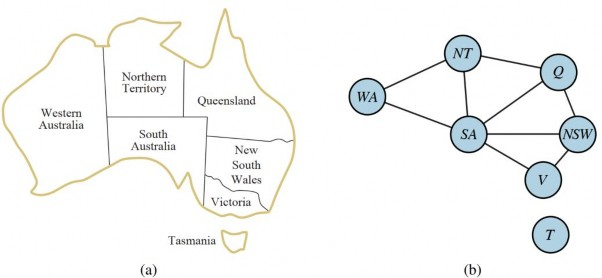
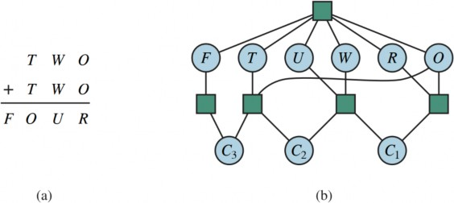
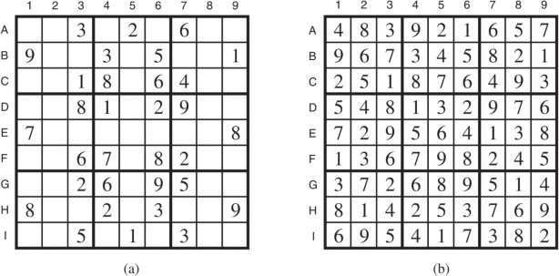
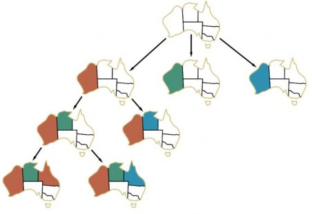
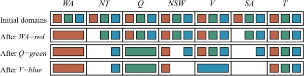
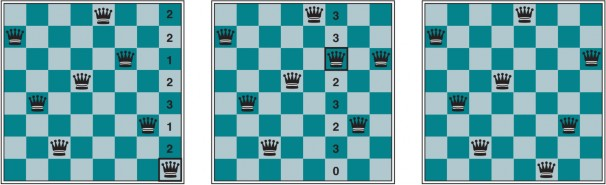
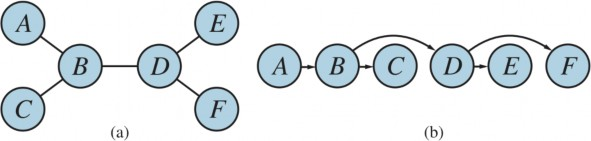
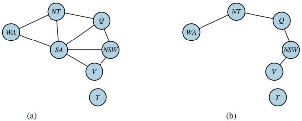
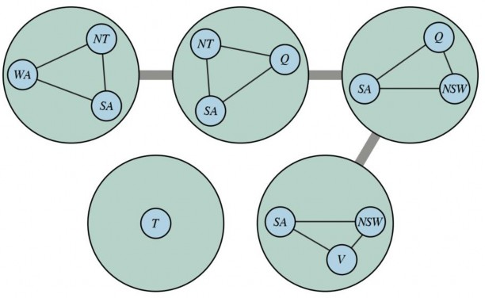

CHƯƠNG 5 CÁC BÀI TOÁN THỎA MÃN RÀNG BUỘC
Trong chương này, chúng ta sẽ xem xét cách xử lý các trạng thái không chỉ như những “hộp đen” nhỏ, mà còn như những cấu trúc bên trong, từ đó dẫn đến các phương pháp tìm kiếm mới và hiểu sâu hơn về cấu trúc của bài toán.
Các Chương 3 và 4 đã khám phá ý tưởng rằng các bài toán có thể được giải quyết bằng cách tìm kiếm trên không gian trạng thái: một đồ thị trong đó các nút là trạng thái và các cạnh là các hành động. Chúng ta đã thấy rằng các heuristic chuyên biệt cho từng miền có thể ước tính chi phí để đạt được mục tiêu từ một trạng thái nhất định, nhưng từ quan điểm của thuật toán tìm kiếm, mỗi trạng thái là một thể nguyên tử, hay không thể chia nhỏ—một hộp đen không có cấu trúc bên trong. Đối với mỗi bài toán, chúng ta cần mã chuyên biệt cho từng miền để mô tả các chuyển đổi giữa các trạng thái.
Trong chương này, chúng ta sẽ “mở hộp đen” bằng cách sử dụng một biểu diễn được phân tách cho mỗi trạng thái: một tập hợp các biến, mỗi biến có một giá trị. Một bài toán được giải quyết khi mỗi biến có một giá trị thỏa mãn tất cả các ràng buộc trên biến đó. Một bài toán được mô tả theo cách này được gọi là một bài toán thỏa mãn ràng buộc, hay CSP.
Các thuật toán tìm kiếm CSP tận dụng cấu trúc của các trạng thái và sử dụng các heuristic tổng quát thay vì các heuristic chuyên biệt cho từng miền để cho phép giải quyết các bài toán phức tạp. Ý tưởng chính là loại bỏ một lúc các phần lớn của không gian tìm kiếm bằng cách xác định các tổ hợp biến/giá trị vi phạm các ràng buộc. CSP có lợi thế bổ sung là các hành động và mô hình chuyển đổi có thể được suy ra từ mô tả bài toán.
Định nghĩa Bài toán Thỏa mãn Ràng buộc
Một bài toán thỏa mãn ràng buộc bao gồm ba thành phần: X, D, và C:
X là một tập hợp các biến, { 𝑋1, . . . , 𝑋𝑛 }.
D là một tập hợp các miền, { 𝐷1, . . . , 𝐷𝑛 }, mỗi miền cho một biến.
Một miền, 𝐷𝑖 , bao gồm một tập hợp các giá trị được phép, { 𝑣1, . . . , 𝑣𝑘 }, cho biến 𝑋𝑖 . Ví dụ, một biến Boolean sẽ có miền {true, false}. Các biến khác nhau có thể có các miền khác nhau với kích thước khác nhau. Mỗi ràng buộc 𝐶𝑗 bao gồm một cặp ⟨phạm vi, quan hệ⟩, trong đó phạm vi là một tuple các biến tham gia vào ràng buộc và quan hệ là một quan hệ xác định các giá trị mà các biến đó có thể nhận. Một quan hệ có thể được biểu diễn dưới dạng một tập hợp rõ ràng của tất cả các tuple giá trị thỏa mãn ràng buộc, hoặc dưới dạng một hàm có thể tính toán liệu một tuple có phải là thành viên của quan hệ hay không. Ví dụ, nếu 𝑋1 và 𝑋2 đều có miền {1, 2, 3}, thì ràng buộc nói rằng 𝑋1 phải lớn hơn 𝑋2 có thể được viết là ⟨( 𝑋1, 𝑋2 ), {(3, 1), (3, 2), (2, 1)}⟩ hoặc là ⟨( 𝑋1, 𝑋2 ),
𝑋1 > 𝑋2 ⟩.
Các CSP xử lý các gán giá trị cho các biến, { 𝑋𝑖 = 𝑣𝑖, 𝑋𝑗 = 𝑣𝑗, . .. }. Một gán giá trị không vi phạm bất kỳ ràng buộc nào được gọi là một gán giá trị nhất quán hoặc hợp lệ. Một gán giá trị đầy đủlà một gán giá trị trong đó mọi biến đều được gán một giá trị, và một nghiệm cho một CSP là một gán giá trị nhất quán, đầy đủ. Một gán giá trị một phần là một gán giá trị để lại một số biến chưa được gán, và một nghiệm một phần là một gán giá trị một phần mà nhất quán. Giải một CSP nói chung là một bài toán NP-đầy đủ, mặc dù có những lớp con quan trọng của CSP có thể được giải quyết rất hiệu quả.
Bài toán ví dụ: Tô màu bản đồ
Giả sử rằng, sau khi đã chán với Romania, chúng ta đang xem xét một bản đồ của Úc cho thấy mỗi bang và vùng lãnh thổ của nó (Hình 5.1(a)). Chúng ta được giao nhiệm vụ tô màu cho mỗi vùng bằng màu đỏ, xanh lá cây, hoặc xanh dương sao cho không có hai vùng lân cận nào có cùng màu. Để diễn đạt bài toán này dưới dạng một CSP, chúng ta định nghĩa các biến là các vùng:
𝑋 = {𝑊𝐴, 𝑁𝑇, 𝑄, 𝑁𝑆𝑊, 𝑉, 𝑆𝐴, 𝑇} .
Miền của mỗi biến là tập hợp 𝐷𝑖 = {𝑟𝑒𝑑, 𝑔𝑟𝑒𝑒𝑛, 𝑏𝑙𝑢𝑒} . Các ràng buộc yêu cầu các vùng lân cận phải có các màu khác nhau. Vì có chín nơi các vùng tiếp giáp, có chín ràng buộc:
𝐶 = {𝑆𝐴 ≠ 𝑊𝐴, 𝑆𝐴 ≠ 𝑁𝑇, 𝑆𝐴 ≠ 𝑄, 𝑆𝐴 ≠ 𝑁𝑆𝑊, 𝑆𝐴 ≠ 𝑉, 𝑊𝐴 ≠ 𝑁𝑇, 𝑁𝑇 ≠ 𝑄, 𝑄 ≠
𝑁𝑆𝑊, 𝑁𝑆𝑊 ≠ 𝑉} .
Ở đây chúng ta đang sử dụng các chữ viết tắt; 𝑆𝐴 ≠ 𝑊𝐴 là viết tắt của ⟨(SA, WA), 𝑆𝐴 ≠ 𝑊𝐴 ⟩,
trong đó 𝑆𝐴 ≠ 𝑊𝐴 có thể được liệt kê đầy đủ lần lượt là
{ (𝑟𝑒𝑑, 𝑔𝑟𝑒𝑒𝑛), (𝑟𝑒𝑑, 𝑏𝑙𝑢𝑒), (𝑔𝑟𝑒𝑒𝑛, 𝑟𝑒𝑑), (𝑔𝑟𝑒𝑒𝑛, 𝑏𝑙𝑢𝑒), (𝑏𝑙𝑢𝑒, 𝑟𝑒𝑑), (𝑏𝑙𝑢𝑒, 𝑔𝑟𝑒𝑒𝑛)}.
Có nhiều nghiệm khả thi cho bài toán này, chẳng hạn như:
{𝑊𝐴 = 𝑟𝑒𝑑, 𝑁𝑇 = 𝑔𝑟𝑒𝑒𝑛, 𝑄 = 𝑟𝑒𝑑, 𝑁𝑆𝑊 = 𝑔𝑟𝑒𝑒𝑛, 𝑉 = 𝑟𝑒𝑑, 𝑆𝐴 = 𝑏𝑙𝑢𝑒, 𝑇 = 𝑟𝑒𝑑} .
Có thể hữu ích khi hình dung một CSP dưới dạng một đồ thị ràng buộc, như được hiển thị trong Hình 5.1(b). Các nút của đồ thị tương ứng với các biến của bài toán, và một cạnh nối hai biến bất kỳ tham gia vào một ràng buộc.
Tại sao phải diễn đạt một bài toán dưới dạng CSP? Một lý do là các CSP tạo ra một biểu diễn tự nhiên cho nhiều loại bài toán; thường dễ dàng diễn đạt một bài toán dưới dạng một CSP. Một lý do khác là nhiều năm phát triển đã giúp các bộ giải CSP trở nên nhanh và hiệu quả. Thứ ba là một bộ giải CSP có thể nhanh chóng cắt bỏ những phần lớn của không gian tìm kiếm mà một bộ tìm kiếm không gian trạng thái nguyên tử không thể. Ví dụ, một khi chúng ta đã chọn {𝑆𝐴 = 𝑏𝑙𝑢𝑒} trong bài toán Úc, chúng ta có thể kết luận rằng không có biến nào trong năm biến lân cận có thể nhận giá trị blue. Một thủ tục tìm kiếm không sử dụng ràng buộc sẽ phải xem xét 35 = 243 gán giá trị cho năm biến lân cận; với các ràng buộc, chúng ta chỉ có 25 = 32 gán giá trị để xem xét, giảm 87%.
Trong tìm kiếm không gian trạng thái nguyên tử, chúng ta chỉ có thể hỏi: trạng thái cụ thể này có phải là mục tiêu không? Không? Còn cái này thì sao? Với CSP, một khi chúng ta phát hiện ra rằng một gán giá trị một phần vi phạm một ràng buộc, chúng ta có thể loại bỏ ngay lập tức các tinh
chỉnh tiếp theo của gán giá trị một phần đó. Hơn nữa, chúng ta có thể thấy tại sao gán giá trị không phải là một nghiệm—chúng ta thấy biến nào vi phạm một ràng buộc—vì vậy chúng ta có thể tập trung sự chú ý vào các biến quan trọng. Kết quả là, nhiều bài toán không thể giải quyết được bằng tìm kiếm không gian trạng thái nguyên tử có thể được giải quyết nhanh chóng khi được diễn đạt dưới dạng một CSP.

Bài toán ví dụ: Lập lịch sản xuất
Các nhà máy có bài toán lập lịch cho các công việc trong một ngày, tuân theo nhiều ràng buộc khác nhau. Trong thực tế, nhiều bài toán trong số này được giải quyết bằng kỹ thuật CSP. Hãy xem xét bài toán lập lịch lắp ráp một chiếc xe hơi. Toàn bộ công việc bao gồm các nhiệm vụ, và chúng ta có thể mô hình hóa mỗi nhiệm vụ như một biến, trong đó giá trị của mỗi biến là thời gian bắt đầu của nhiệm vụ, được biểu thị bằng một số nguyên số phút. Các ràng buộc ưu tiên có thể khẳng định rằng một nhiệm vụ phải xảy ra trước một nhiệm vụ khác—ví dụ, một bánh xe phải được lắp trước khi nắp chụp được gắn vào—và chỉ có một số lượng nhiệm vụ nhất định có thể diễn ra cùng một lúc. Các ràng buộc cũng có thể chỉ định rằng một nhiệm vụ mất một khoảng thời gian nhất định để hoàn thành.
Chúng ta xem xét một phần nhỏ của việc lắp ráp xe hơi, bao gồm 15 nhiệm vụ: lắp trục (trước và sau), gắn cả bốn bánh xe (phải và trái, trước và sau), siết chặt các đai ốc cho mỗi bánh xe, gắn nắp chụp, và kiểm tra lắp ráp cuối cùng. Chúng ta có thể biểu diễn các nhiệm vụ bằng 15 biến:
} .
𝑋 = {𝐴𝑥𝑙𝑒𝐹, 𝐴𝑥𝑙𝑒𝐵, 𝑊ℎ𝑒𝑒𝑙𝑅𝐹, 𝑊ℎ𝑒𝑒𝑙𝐿𝐹, 𝑊ℎ𝑒𝑒𝑙𝑅𝐵, 𝑊ℎ𝑒𝑒𝑙𝐿𝐵, 𝑁𝑢𝑡𝑠𝑅𝐹, 𝑁𝑢𝑡𝑠𝐿𝐹, 𝑁𝑢𝑡𝑠𝑅𝐵,
𝑁𝑢𝑡𝑠𝐿𝐵, 𝐶𝑎𝑝𝑅𝐹, 𝐶𝑎𝑝𝐿𝐹, 𝐶𝑎𝑝𝑅𝐵, 𝐶𝑎𝑝𝐿𝐵, 𝐼𝑛𝑠𝑝𝑒𝑐𝑡
Tiếp theo, chúng ta biểu diễn các ràng buộc ưu tiên giữa các nhiệm vụ riêng lẻ. Bất cứ khi nào một nhiệm vụ 𝑇1 phải xảy ra trước nhiệm vụ 𝑇2 , và nhiệm vụ 𝑇1 mất thời gian 𝑑1 để hoàn thành, chúng ta thêm một ràng buộc số học có dạng:
𝑇1 + 𝑑1 ≤ 𝑇2 .
Trong ví dụ của chúng ta, các trục phải được đặt đúng chỗ trước khi các bánh xe được lắp vào, và mất 10 phút để lắp một trục, vì vậy chúng ta viết:
𝐴𝑥𝑙𝑒𝐹 + 10 ≤ 𝑊ℎ𝑒𝑒𝑙𝑅𝐹 ; 𝐴𝑥𝑙𝑒𝐹 + 10 ≤ 𝑊ℎ𝑒𝑒𝑙𝐿𝐹 ;
𝐴𝑥𝑙𝑒𝐵 + 10 ≤ 𝑊ℎ𝑒𝑒𝑙𝑅𝐵 ; 𝐴𝑥𝑙𝑒𝐵 + 10 ≤ 𝑊ℎ𝑒𝑒𝑙𝐿𝐵 .
Tiếp theo chúng ta nói rằng đối với mỗi bánh xe, chúng ta phải gắn bánh xe (mất 1 phút), sau đó siết chặt các đai ốc (2 phút), và cuối cùng gắn nắp chụp (1 phút, nhưng chưa được biểu diễn ở đây):
𝑊ℎ𝑒𝑒𝑙𝑅𝐹 + 1 ≤ 𝑁𝑢𝑡𝑠𝑅𝐹 ; 𝑁𝑢𝑡𝑠𝑅𝐹 + 2 ≤ 𝐶𝑎𝑝𝑅𝐹 ;
𝑊ℎ𝑒𝑒𝑙𝐿𝐹 + 1 ≤ 𝑁𝑢𝑡𝑠𝐿𝐹 ; 𝑁𝑢𝑡𝑠𝐿𝐹 + 2 ≤ 𝐶𝑎𝑝𝐿𝐹 ;
𝑊ℎ𝑒𝑒𝑙𝑅𝐵 + 1 ≤ 𝑁𝑢𝑡𝑠𝑅𝐵 ; 𝑁𝑢𝑡𝑠𝑅𝐵 + 2 ≤ 𝐶𝑎𝑝𝑅𝐵 ;
𝑊ℎ𝑒𝑒𝑙𝐿𝐵 + 1 ≤ 𝑁𝑢𝑡𝑠𝐿𝐵 ; 𝑁𝑢𝑡𝑠𝐿𝐵 + 2 ≤ 𝐶𝑎𝑝𝐿𝐵 .
Giả sử chúng ta có bốn công nhân để lắp bánh xe, nhưng họ phải dùng chung một công cụ giúp đặt trục vào đúng chỗ. Chúng ta cần một ràng buộc lựa chọn để nói rằng AxleF và AxleB không được trùng nhau về thời gian; một trong hai phải đến trước hoặc đến sau:
(𝐴𝑥𝑙𝑒𝐹 + 10 ≤ 𝐴𝑥𝑙𝑒𝐵)ℎ𝑜ặ𝑐(𝐴𝑥𝑙𝑒𝐵 + 10 ≤ 𝐴𝑥𝑙𝑒𝐹) .
Điều này trông giống như một ràng buộc phức tạp hơn, kết hợp số học và logic. Nhưng nó vẫn quy về một tập hợp các cặp giá trị mà AxleF và AxleB có thể nhận.
Chúng ta cũng cần khẳng định rằng việc kiểm tra diễn ra cuối cùng và mất 3 phút. Đối với mọi biến ngoại trừ Inspect, chúng ta thêm một ràng buộc có dạng 𝑋 + 𝑑𝑋 ≤ 𝐼𝑛𝑠𝑝𝑒𝑐𝑡 . Cuối cùng, giả sử có một yêu cầu hoàn thành toàn bộ lắp ráp trong 30 phút. Chúng ta có thể đạt được điều đó bằng cách giới hạn miền của tất cả các biến:
𝐷{𝑖} = {0,1,2,3, … ,30}.
Bài toán cụ thể này rất dễ giải, nhưng các CSP đã được áp dụng thành công cho các bài toán lập lịch sản xuất như thế này với hàng nghìn biến.
Các biến thể của mô hình CSP
Loại CSP đơn giản nhất bao gồm các biến có miền rời rạc, hữu hạn. Các bài toán tô màu bản đồ và lập lịch với giới hạn thời gian đều thuộc loại này. Bài toán 8 con hậu (Hình 4.3) cũng có thể được xem là một CSP có miền hữu hạn, trong đó các biến 𝑄1, . . . , 𝑄8 tương ứng với các con hậu trong cột 1 đến 8, và miền của mỗi biến chỉ định các số hàng có thể có cho con hậu trong cột đó,
$D_{i}=\left{1,2,3,4,5,6,7,8\right}$ . Các ràng buộc nói rằng không có hai con hậu nào có thể ở
cùng một hàng hoặc đường chéo.
Một miền rời rạc có thể là vô hạn, chẳng hạn như tập hợp các số nguyên hoặc chuỗi. (Nếu chúng ta không đặt thời hạn cho bài toán lập lịch công việc, sẽ có vô số thời gian bắt đầu cho mỗi biến.) Với các miền vô hạn, chúng ta phải sử dụng các ràng buộc ngầm như 𝑇1 + 𝑑1 ≤ 𝑇2 thay vì các tuple giá trị rõ ràng. Các thuật toán giải đặc biệt (mà chúng ta không thảo luận ở đây) tồn tại cho các ràng buộc tuyến tính trên các biến số nguyên—tức là, các ràng buộc, như đã nêu ở trên, trong đó mỗi biến chỉ xuất hiện ở dạng tuyến tính. Có thể chứng minh rằng không có thuật toán nào tồn tại để giải các ràng buộc phi tuyến tổng quát trên các biến số nguyên—bài toán là không thể quyết định.
Các bài toán thỏa mãn ràng buộc với các miền liên tục rất phổ biến trong thế giới thực và được nghiên cứu rộng rãi trong lĩnh vực nghiên cứu vận trù học. Ví dụ, việc lập lịch các thí nghiệm trên Kính viễn vọng không gian Hubble yêu cầu thời gian quan sát rất chính xác; thời gian bắt đầu và kết thúc của mỗi lần quan sát và thao tác là các biến có giá trị liên tục phải tuân theo nhiều ràng buộc thiên văn, ưu tiên và năng lượng khác nhau. Lớp CSP miền liên tục nổi tiếng nhất là các bài toán quy hoạch tuyến tính, trong đó các ràng buộc phải là các phương trình hoặc bất phương trình tuyến tính. Các bài toán quy hoạch tuyến tính có thể được giải trong thời gian đa thức theo số lượng biến. Các bài toán với các loại ràng buộc và hàm mục tiêu khác nhau cũng đã được nghiên cứu—quy hoạch bậc hai, quy hoạch hình nón bậc hai, v.v. Những bài toán này tạo thành một lĩnh vực quan trọng của toán học ứng dụng.
Ngoài việc kiểm tra các loại biến có thể xuất hiện trong CSP, điều hữu ích là xem xét các loại ràng buộc. Loại đơn giản nhất là ràng buộc một ngôi, giới hạn giá trị của một biến duy nhất. Ví dụ, trong bài toán tô màu bản đồ, có thể người dân Nam Úc không dung thứ cho màu xanh lá cây; chúng ta có thể thể hiện điều đó bằng ràng buộc một ngôi ⟨(SA), SA ≠ green⟩. (Việc chỉ định ban đầu miền của một biến cũng có thể được xem là một ràng buộc một ngôi.)
Một ràng buộc hai ngôi liên quan đến hai biến. Ví dụ, SA ≠ NSW là một ràng buộc hai ngôi. Một CSP hai ngôi là một CSP chỉ có các ràng buộc một ngôi và hai ngôi; nó có thể được biểu diễn dưới dạng đồ thị ràng buộc, như trong Hình 5.1(b).
Chúng ta cũng có thể định nghĩa các ràng buộc bậc cao hơn. Ràng buộc ba ngôi Between(X,Y,Z), ví dụ, có thể được định nghĩa là ⟨(X,Y,Z), 𝑋 < 𝑌 < 𝑍 hoặc 𝑋 > 𝑌 > 𝑍 ⟩.
Một ràng buộc liên quan đến một số lượng biến tùy ý được gọi là một ràng buộc toàn cục. (Tên này là truyền thống nhưng gây nhầm lẫn vì một ràng buộc toàn cục không nhất thiết phải liên quan đến tất cả các biến trong một bài toán). Một trong những ràng buộc toàn cục phổ biến nhất là Alldiff, nói rằng tất cả các biến liên quan đến ràng buộc phải có các giá trị khác nhau. Trong các bài toán Sudoku (xem Mục 5.2.6), tất cả các biến trong một hàng, cột hoặc ô vuông 3 × 3 phải thỏa mãn ràng buộc Alldiff.
Một ví dụ khác được cung cấp bởi các câu đố mật mã số (Hình 5.2(a)). Mỗi chữ cái trong một câu đố mật mã số đại diện cho một chữ số khác nhau. Đối với trường hợp trong Hình 5.2(a), điều này sẽ được biểu diễn dưới dạng ràng buộc toàn cục 𝐴𝑙𝑙𝑑𝑖𝑓𝑓(𝐹, 𝑇, 𝑈, 𝑊, 𝑅, 𝑂) . Các ràng buộc cộng trên bốn cột của câu đố có thể được viết dưới dạng các ràng buộc n-ngôi sau:
𝑂 + 𝑂 = 𝑅 + 10 ⋅ 𝐶1
𝐶1 + 𝑊 + 𝑊 = 𝑈 + 10 ⋅ 𝐶2
𝐶2 + 𝑇 + 𝑇 = 𝑂 + 10 ⋅ 𝐶3
𝐶3 = 𝐹
trong đó 𝐶1 , 𝐶2 , và 𝐶3 là các biến phụ trợ đại diện cho chữ số được mang sang hàng chục, hàng trăm, hoặc hàng nghìn. Các ràng buộc này có thể được biểu diễn trong một siêu đồ thị ràng buộc, chẳng hạn như đồ thị được hiển thị trong Hình 5.2(b). Một siêu đồ thị bao gồm các nút thông thường (các hình tròn trong hình) và các siêu nút (các hình vuông), đại diện cho các ràng buộc n- ngôi—các ràng buộc liên quan đến n biến.
Ngoài ra, như Bài tập 5.NARY yêu cầu bạn chứng minh, mọi ràng buộc miền hữu hạn có thể được giảm xuống một tập hợp các ràng buộc hai ngôi nếu đủ các biến phụ trợ được giới thiệu. Điều này có nghĩa là chúng ta có thể biến đổi bất kỳ CSP nào thành một CSP chỉ có các ràng buộc hai ngôi— điều này chắc chắn làm cho cuộc sống của người thiết kế thuật toán trở nên đơn giản hơn. Một cách khác để chuyển đổi một CSP n-ngôi thành một CSP hai ngôi là biến đổi đồ thị đối ngẫu: tạo một đồ thị mới trong đó sẽ có một biến cho mỗi ràng buộc trong đồ thị gốc, và một ràng buộc hai ngôi cho mỗi cặp ràng buộc trong đồ thị gốc có chung biến. Ví dụ, hãy xem xét một CSP với các biến 𝑋 = {𝑋, 𝑌, 𝑍} , mỗi biến có miền {1,2,3,4,5} , và với hai ràng buộc 𝐶1: ⟨(𝑋, 𝑌, 𝑍), 𝑋 + 𝑌 = 𝑍⟩ và 𝐶2: ⟨(𝑋, 𝑌), 𝑋 + 1 = 𝑌⟩ . Khi đó, đồ thị đối ngẫu sẽ có các biến 𝑋 = {𝐶1, 𝐶2} , trong đó miền của biến 𝐶1 trong đồ thị đối ngẫu là tập hợp các tuple {(𝑥𝑖, 𝑦𝑗, 𝑧𝑘)} từ ràng buộc 𝐶1 trong bài toán
gốc, và tương tự miền của 𝐶2 là tập hợp các tuple {(𝑥𝑖, 𝑦𝑗)} . Đồ thị đối ngẫu có ràng buộc hai ngôi
⟨( 𝐶1, 𝐶2 ), 𝑅1 ⟩, trong đó 𝑅1 là một quan hệ mới định nghĩa ràng buộc giữa 𝐶1 và 𝐶2 ; trong trường hợp này nó sẽ là 𝑅1 = {((1,2,3), (1,2)), ((2,3,5), (2,3))} .

thị ràng buộc Alldiff (ô vuông ở trên cùng) cũng như các ràng buộc cộng cột (bốn ô vuông ở giữa). Các biến 𝐶1, 𝐶2, và 𝐶3 đại diện cho các chữ số nhớ cho ba cột từ phải sang trái.
Tuy nhiên, có hai lý do tại sao chúng ta có thể thích một ràng buộc toàn cục như Alldiff hơn là một tập hợp các ràng buộc hai ngôi. Thứ nhất, việc viết mô tả bài toán bằng cách sử dụng Alldiff dễ dàng hơn và ít lỗi hơn. Thứ hai, có thể thiết kế các thuật toán suy luận chuyên dụng cho các ràng buộc toàn cục hiệu quả hơn so với việc hoạt động với các ràng buộc nguyên thủy. Chúng ta mô tả các thuật toán suy luận này trong Mục 5.2.5.
Các ràng buộc chúng ta đã mô tả cho đến nay đều là các ràng buộc tuyệt đối, việc vi phạm chúng loại bỏ một nghiệm tiềm năng. Nhiều CSP trong thế giới thực bao gồm các ràng buộc ưu tiên chỉ ra những nghiệm nào được ưa chuộng hơn. Ví dụ, trong một bài toán lập lịch lớp học đại học có các ràng buộc tuyệt đối rằng không giáo sư nào có thể dạy hai lớp cùng một lúc. Nhưng chúng ta cũng có thể cho phép các ràng buộc ưu tiên: Giáo sư R có thể thích dạy vào buổi sáng, trong khi Giáo sư N thích dạy vào buổi chiều. Một lịch trình có Giáo sư R dạy vào lúc 2 giờ chiều vẫn sẽ là một nghiệm được phép (trừ khi Giáo sư R là trưởng khoa) nhưng sẽ không phải là một nghiệm tối ưu. Các ràng buộc ưu tiên thường có thể được mã hóa dưới dạng chi phí trên các gán giá trị biến riêng lẻ—ví dụ, gán một vị trí buổi chiều cho Giáo sư R tốn 2 điểm so với hàm mục tiêu tổng thể, trong khi một vị trí buổi sáng tốn 1 điểm. Với công thức này, các CSP có ưu tiên có thể được giải quyết bằng các phương pháp tìm kiếm tối ưu hóa, dựa trên đường đi hoặc cục bộ. Chúng ta gọi một bài toán như vậy là bài toán tối ưu hóa ràng buộc, hay COP. Các chương trình tuyến tính là một lớp của COP.
Lan truyền Ràng buộc: Suy luận trong CSP
Một thuật toán tìm kiếm không gian trạng thái nguyên tử chỉ tiến hành theo một cách: bằng cách mở rộng một nút để truy cập các nút kế nhiệm. Một thuật toán CSP có nhiều lựa chọn. Nó có thể tạo ra các nút kế nhiệm bằng cách chọn một gán giá trị biến mới, hoặc nó có thể thực hiện một loại suy luận cụ thể được gọi là lan truyền ràng buộc: sử dụng các ràng buộc để giảm số lượng giá trị hợp lệ cho một biến, từ đó có thể giảm các giá trị hợp lệ cho một biến khác, và cứ thế tiếp tục. Ý tưởng là điều này sẽ để lại ít lựa chọn hơn để xem xét khi chúng ta thực hiện lựa chọn tiếp theo về một gán giá trị biến. Lan truyền ràng buộc có thể được đan xen với tìm kiếm, hoặc có thể được thực hiện như một bước tiền xử lý, trước khi tìm kiếm bắt đầu. Đôi khi bước tiền xử lý này có thể giải quyết toàn bộ bài toán, do đó không cần tìm kiếm gì cả.
Ý tưởng chính là tính nhất quán cục bộ. Nếu chúng ta coi mỗi biến là một nút trong một đồ thị (xem Hình 5.1(b)) và mỗi ràng buộc hai ngôi là một cạnh, thì quá trình thực thi tính nhất quán cục bộ trong mỗi phần của đồ thị sẽ làm cho các giá trị không nhất quán bị loại bỏ trên toàn bộ đồ thị. Có nhiều loại tính nhất quán cục bộ khác nhau, mà chúng ta sẽ lần lượt đề cập.
Tính nhất quán nút
Một biến duy nhất (tương ứng với một nút trong đồ thị CSP) là nhất quán nút nếu tất cả các giá trị trong miền của biến thỏa mãn các ràng buộc một ngôi của biến đó. Ví dụ, trong biến thể của bài toán tô màu bản đồ Úc (Hình 5.1) trong đó người dân Nam Úc không thích màu xanh lá cây, biến SA bắt đầu với miền {red, green, blue}, và chúng ta có thể làm cho nó nhất quán nút bằng cách
loại bỏ green, để lại SA với miền bị rút gọn là {red, blue}. Chúng ta nói rằng một đồ thị là nhất quán nút nếu mọi biến trong đồ thị đều nhất quán nút.
Việc loại bỏ tất cả các ràng buộc một ngôi trong một CSP rất dễ dàng bằng cách giảm miền của các biến có ràng buộc một ngôi ngay từ đầu quá trình giải quyết. Như đã đề cập trước đó, cũng có thể biến đổi tất cả các ràng buộc n-ngôi thành hai ngôi. Vì lý do này, một số bộ giải CSP chỉ làm việc với các ràng buộc hai ngôi, mong đợi người dùng loại bỏ các ràng buộc khác trước đó. Chúng ta đưa ra giả định đó cho phần còn lại của chương này, trừ khi có ghi chú.
Tính nhất quán cung
Một biến trong một CSP là nhất quán cung nếu mọi giá trị trong miền của nó thỏa mãn các ràng buộc hai ngôi của biến đó. Chính xác hơn, 𝑋𝑖 nhất quán cung đối với một biến khác 𝑋𝑗 nếu với mọi giá trị trong miền hiện tại 𝐷𝑖 có một số giá trị trong miền 𝐷𝑗 thỏa mãn ràng buộc hai ngôi trên cung (𝑋𝑖, 𝑋𝑗) . Một đồ thị là nhất quán cung nếu mọi biến đều nhất quán cung với mọi biến khác. Ví dụ, hãy xem xét ràng buộc 𝑌 = 𝑋2 trong đó miền của cả X và Y là tập hợp các chữ số thập phân. Chúng ta có thể viết ràng buộc này một cách rõ ràng là ⟨(X,Y), {(0, 0), (1, 1), (2, 4), (3, 9)}⟩.
Để làm cho X nhất quán cung đối với Y, chúng ta giảm miền của X xuống {0, 1, 2, 3}. Nếu chúng ta cũng làm cho Y nhất quán cung đối với X, thì miền của Y trở thành {0, 1, 4, 9}, và toàn bộ CSP là nhất quán cung. Mặt khác, tính nhất quán cung không thể làm gì cho bài toán tô màu bản đồ Úc.
Hãy xem xét ràng buộc bất đẳng thức sau trên (SA, WA):
(𝑡𝑒𝑥𝑡𝑟𝑒𝑑, 𝑔𝑟𝑒𝑒𝑛), (𝑡𝑒𝑥𝑡𝑟𝑒𝑑, 𝑏𝑙𝑢𝑒), (𝑡𝑒𝑥𝑡𝑔𝑟𝑒𝑒𝑛, 𝑟𝑒𝑑), (𝑡𝑒𝑥𝑡𝑔𝑟𝑒𝑒𝑛, 𝑏𝑙𝑢𝑒), (𝑡𝑒𝑥𝑡𝑏𝑙𝑢𝑒, 𝑟𝑒𝑑),
(𝑡𝑒𝑥𝑡𝑏𝑙𝑢𝑒, 𝑔𝑟𝑒𝑒𝑛) . Bất kể bạn chọn giá trị nào cho SA (hoặc cho WA), đều có một giá trị hợp lệ cho biến kia. Vì vậy, việc áp dụng tính nhất quán cung không có tác dụng gì đối với miền của cả hai biến.
Thuật toán phổ biến nhất để thực thi tính nhất quán cung được gọi là AC-3 (xem Hình 5.3). Để làm cho mọi biến nhất quán cung, thuật toán AC-3 duy trì một hàng đợi các cung để xem xét. Ban đầu, hàng đợi chứa tất cả các cung trong CSP. (Mỗi ràng buộc hai ngôi trở thành hai cung, một theo mỗi hướng.) AC-3 sau đó lấy ra một cung tùy ý (𝑋𝑖, 𝑋𝑗) từ hàng đợi và làm cho 𝑋𝑖 nhất quán cung đối với 𝑋𝑗 . Nếu điều này không làm thay đổi 𝐷𝑖 , thuật toán chỉ đơn giản chuyển sang cung tiếp theo. Nhưng nếu điều này sửa đổi 𝐷𝑖 (làm cho miền nhỏ hơn), thì chúng ta thêm vào hàng đợi tất cả các cung (𝑋𝑘, 𝑋𝑖) trong đó 𝑋𝑘 là một nút lân cận của 𝑋𝑖 . Chúng ta cần làm điều đó vì sự thay đổi trong 𝐷𝑖 có thể cho phép giảm thêm trong 𝐷𝑘 , ngay cả khi chúng ta đã xem xét 𝑋𝑘 trước đó. Nếu 𝐷𝑖 bị rút gọn xuống rỗng, thì chúng ta biết rằng toàn bộ CSP không có nghiệm nhất quán, và AC-3 có thể ngay lập tức trả về thất bại. Ngược lại, chúng ta tiếp tục kiểm tra, cố gắng loại bỏ các giá trị khỏi miền của các biến cho đến khi không còn cung nào trong hàng đợi. Tại thời điểm đó, chúng ta còn lại một CSP tương đương với CSP gốc—chúng đều có cùng các nghiệm—nhưng CSP nhất quán cung sẽ nhanh hơn để tìm kiếm vì các biến của nó có miền nhỏ hơn. Trong một số trường hợp, nó giải quyết bài toán hoàn toàn (bằng cách giảm mọi miền xuống kích thước 1) và trong những trường hợp khác nó chứng minh rằng không có nghiệm nào tồn tại (bằng cách giảm một số miền xuống kích thước 0).
Độ phức tạp của AC-3 có thể được phân tích như sau. Giả sử một CSP có 𝑛 biến, mỗi biến có kích thước miền tối đa là 𝑑 , và với 𝑐 ràng buộc hai ngôi (cung). Mỗi cung (𝑋𝑘, 𝑋𝑖) chỉ có thể được chèn vào hàng đợi 𝑑 lần vì 𝑋𝑖 có tối đa 𝑑 giá trị để xóa. Việc kiểm tra tính nhất quán của một cung có thể được thực hiện trong thời gian 𝑂(𝑑2) , vì vậy chúng ta có tổng thời gian trường hợp xấu nhất là 𝑂(𝑐𝑑3) .
function AC-3( csp) returns false if an inconsistency is found and true otherwise
queue← a queue of arcs, initially all the arcs in csp
while queue is not empty do
(Xi, Xj) ← POP(queue)
if REVISE(csp, Xi, Xj) then
if size of Di = 0 then return false
for each Xk in Xi.Neighbors - {Xj} do add (Xk, Xi) to queue
return true
function REVISE( csp, Xi, Xj) returns true iff we revise the domain of Xi
revised←false
for each x in Di do
if no value y in Dj allows (x,y) to satisfy the constraint between Xi and Xj then delete x from Di
revised←true
return revised
Tính nhất quán đường đi
Giả sử chúng ta phải tô màu bản đồ Úc chỉ với hai màu, đỏ và xanh dương. Tính nhất quán cung không làm gì cả vì mọi ràng buộc có thể được thỏa mãn riêng lẻ với màu đỏ ở một đầu và màu xanh dương ở đầu kia. Nhưng rõ ràng là không có nghiệm cho bài toán: vì Tây Úc, Lãnh thổ Bắc Úc, và Nam Úc đều tiếp xúc với nhau, chúng ta cần ít nhất ba màu chỉ riêng cho chúng.
Tính nhất quán cung thắt chặt các miền (ràng buộc một ngôi) bằng cách sử dụng các cung (ràng buộc hai ngôi). Để tiến bộ trên các bài toán như tô màu bản đồ, chúng ta cần một khái niệm nhất quán mạnh hơn. Tính nhất quán đường đi thắt chặt các ràng buộc hai ngôi bằng cách sử dụng các ràng buộc ngầm được suy ra bằng cách xem xét ba biến.
Một tập hợp hai biến { 𝑋𝑖, 𝑋𝑗 } là nhất quán đường đi đối với một biến thứ ba 𝑋𝑚 nếu, với mọi gán giá trị { 𝑋𝑖 = 𝑎, 𝑋𝑗 = 𝑏 } nhất quán với các ràng buộc (nếu có) trên { 𝑋𝑖, 𝑋𝑗 }, có một gán giá trị cho 𝑋𝑚 thỏa mãn các ràng buộc trên { 𝑋𝑖, 𝑋𝑚 } và { 𝑋𝑚, 𝑋𝑗 }. Tên gọi này đề cập đến tính nhất quán tổng thể của đường đi từ 𝑋𝑖 đến 𝑋𝑗 với 𝑋𝑚 ở giữa.
Hãy xem tính nhất quán đường đi hoạt động như thế nào trong việc tô màu bản đồ Úc với hai màu. Chúng ta sẽ làm cho tập hợp {WA, SA} nhất quán đường đi đối với NT. Chúng ta bắt đầu bằng cách liệt kê các gán giá trị nhất quán cho tập hợp. Trong trường hợp này, chỉ có hai: {WA = red, SA = blue} và {WA = blue, SA = red}. Chúng ta có thể thấy rằng với cả hai gán giá trị này, NT không thể là màu đỏ cũng không thể là màu xanh dương (vì nó sẽ xung đột với WA hoặc SA). Vì không có lựa chọn hợp lệ nào cho NT, chúng ta loại bỏ cả hai gán giá trị, và cuối cùng chúng ta không còn gán giá trị hợp lệ nào cho {WA, SA}. Do đó, chúng ta biết rằng không thể có nghiệm cho bài toán này.
Tính nhất quán k
Các dạng lan truyền mạnh hơn có thể được định nghĩa bằng khái niệm tính nhất quán k. Một CSP là nhất quán k nếu, với bất kỳ tập hợp 𝑘 − 1 biến nào và với bất kỳ gán giá trị nhất quán nào cho các biến đó, một giá trị nhất quán luôn có thể được gán cho bất kỳ biến thứ 𝑘 nào. Tính nhất quán 1 nói rằng, với tập hợp rỗng, chúng ta có thể làm cho bất kỳ tập hợp một biến nào nhất quán: đây là cái mà chúng ta gọi là tính nhất quán nút. Tính nhất quán 2 giống như tính nhất quán cung. Đối với các đồ thị ràng buộc hai ngôi, tính nhất quán 3 giống như tính nhất quán đường đi.
Một CSP là nhất quán k mạnh nếu nó nhất quán k và cũng nhất quán (𝑘 − 1) , nhất quán (𝑘 − 2)
, . . . cho đến nhất quán 1. Bây giờ giả sử chúng ta có một CSP với 𝑛 nút và làm cho nó nhất quán
𝑛 mạnh (tức là, nhất quán k mạnh cho 𝑘 = 𝑛 ). Sau đó, chúng ta có thể giải bài toán như sau: Đầu tiên, chúng ta chọn một giá trị nhất quán cho 𝑋1 . Sau đó, chúng ta được đảm bảo có thể chọn một giá trị cho 𝑋2 vì đồ thị là nhất quán 2, cho 𝑋3 vì nó là nhất quán 3, v.v. Đối với mỗi biến 𝑋𝑖 , chúng ta chỉ cần tìm kiếm qua 𝑑 giá trị trong miền để tìm một giá trị nhất quán với 𝑋1, . . . , 𝑋𝑖 − 1 . Tổng thời gian chạy chỉ là 𝑂(𝑛2𝑑) .
Tất nhiên, không có bữa trưa nào miễn phí: thỏa mãn ràng buộc nói chung là NP-đầy đủ, và bất kỳ thuật toán nào để thiết lập tính nhất quán 𝑛 phải mất thời gian hàm mũ theo 𝑛 trong trường hợp xấu nhất. Tệ hơn nữa, tính nhất quán 𝑛 cũng yêu cầu không gian hàm mũ theo 𝑛 . Trong thực tế, việc xác định mức độ kiểm tra tính nhất quán phù hợp chủ yếu là một khoa học thực nghiệm. Tính toán tính nhất quán 2 là phổ biến, và tính nhất quán 3 ít phổ biến hơn.
Ràng buộc toàn cục
Hãy nhớ rằng một ràng buộc toàn cục là một ràng buộc liên quan đến một số lượng biến tùy ý (nhưng không nhất thiết phải là tất cả các biến). Các ràng buộc toàn cục xảy ra thường xuyên trong các bài toán thực tế và có thể được xử lý bằng các thuật toán chuyên dụng hiệu quả hơn các phương pháp đa năng được mô tả cho đến nay. Ví dụ, ràng buộc Alldiff nói rằng tất cả các biến liên quan phải có các giá trị riêng biệt (như trong bài toán mật mã số ở trên và câu đố Sudoku dưới đây). Một dạng đơn giản của phát hiện tính không nhất quán cho các ràng buộc Alldiff hoạt động như sau: nếu 𝑚 biến liên quan đến ràng buộc, và nếu chúng có tổng cộng 𝑛 giá trị riêng biệt có thể có, và 𝑚 > 𝑛 , thì ràng buộc không thể được thỏa mãn.
Điều này dẫn đến thuật toán đơn giản sau: Đầu tiên, loại bỏ bất kỳ biến nào trong ràng buộc có miền đơn lẻ, và xóa giá trị của biến đó khỏi miền của các biến còn lại. Lặp lại quá trình này miễn là còn các biến đơn lẻ. Nếu tại bất kỳ thời điểm nào một miền rỗng được tạo ra hoặc có nhiều biến hơn các giá trị miền còn lại, thì một sự không nhất quán đã được phát hiện.
Phương pháp này có thể phát hiện sự không nhất quán trong gán giá trị {𝑊𝐴 = 𝑟𝑒𝑑, 𝑁𝑆𝑊 = 𝑟𝑒𝑑} cho Hình 5.1. Lưu ý rằng các biến SA, NT và Q được kết nối một cách hiệu quả bởi một ràng buộc Alldiff vì mỗi cặp phải có hai màu khác nhau. Sau khi áp dụng AC-3 với gán giá trị một phần, miền của SA, NT và Q đều bị giảm xuống {𝑔𝑟𝑒𝑒𝑛, 𝑏𝑙𝑢𝑒} . Tức là, chúng ta có ba biến và chỉ có hai màu, do đó ràng buộc Alldiff bị vi phạm. Do đó, một thủ tục nhất quán đơn giản cho một ràng buộc bậc cao hơn đôi khi hiệu quả hơn việc áp dụng tính nhất quán cung cho một tập hợp tương đương các ràng buộc hai ngôi.
Một ràng buộc bậc cao hơn quan trọng khác là ràng buộc tài nguyên, đôi khi được gọi là ràng buộc Atmost. Ví dụ, trong một bài toán lập lịch, hãy để 𝑃1, . . . , 𝑃4 biểu thị số lượng nhân sự được giao cho mỗi trong bốn nhiệm vụ. Ràng buộc rằng không có nhiều hơn 10 nhân sự được giao tổng cộng được viết là 𝐴𝑡𝑚𝑜𝑠𝑡(10, 𝑃1, 𝑃2, 𝑃3, 𝑃4) . Chúng ta có thể phát hiện một sự không nhất quán đơn giản bằng cách kiểm tra tổng các giá trị tối thiểu của các miền hiện tại; ví dụ, nếu mỗi biến có miền {3,4,5,6} , ràng buộc Atmost không thể được thỏa mãn. Chúng ta cũng có thể thực thi tính nhất quán bằng cách xóa giá trị tối đa của bất kỳ miền nào nếu nó không nhất quán với các giá trị tối thiểu của các miền khác. Do đó, nếu mỗi biến trong ví dụ của chúng ta có miền {2,3,4,5,6} , các giá trị 5 và 6 có thể bị xóa khỏi mỗi miền.
Đối với các bài toán lớn bị giới hạn tài nguyên với các giá trị số nguyên—chẳng hạn như các bài toán hậu cần liên quan đến việc di chuyển hàng nghìn người trong hàng trăm phương tiện—thường không thể biểu diễn miền của mỗi biến dưới dạng một tập hợp lớn các số nguyên và dần dần giảm tập hợp đó bằng các phương pháp kiểm tra tính nhất quán. Thay vào đó, các miền được biểu diễn bằng các cận trên và dưới và được quản lý bằng lan truyền cận. Ví dụ, trong một bài toán lập lịch hãng hàng không, giả sử có hai chuyến bay, 𝐹1 và 𝐹2 , mà các máy bay có sức chứa lần lượt là 165 và 385. Các miền ban đầu cho số lượng hành khách trên các chuyến bay 𝐹1 và 𝐹2 là
𝐷1 = [0,165] và 𝐷2 = [0,385] .
Bây giờ giả sử chúng ta có ràng buộc bổ sung rằng hai chuyến bay cùng nhau phải chở 420 người:
𝐹1 + 𝐹2 = 420 . Lan truyền các ràng buộc cận, chúng ta giảm các miền xuống
𝐷1 = [35,165] và 𝐷2 = [255,385] . Chúng ta nói rằng một CSP là nhất quán cận nếu với mọi biến X, và đối với cả giá trị cận dưới và cận trên của X, tồn tại một số giá trị của Y thỏa mãn ràng buộc giữa X và Y cho mọi biến Y. Loại lan truyền cận này được sử dụng rộng rãi trong các bài toán ràng buộc thực tế.
Sudoku
Câu đố Sudoku phổ biến đã giới thiệu hàng triệu người đến với các bài toán thỏa mãn ràng buộc, mặc dù họ có thể không nhận ra điều đó. Một bảng Sudoku bao gồm 81 ô vuông, một số trong đó ban đầu được điền các chữ số từ 1 đến 9. Câu đố là điền vào tất cả các ô vuông còn lại sao cho không có chữ số nào xuất hiện hai lần trong bất kỳ hàng, cột, hoặc ô vuông 3 × 3 nào (xem Hình 5.4). Một hàng, cột hoặc ô vuông được gọi là một đơn vị.

Các câu đố Sudoku xuất hiện trên báo và sách câu đố có một đặc điểm là chỉ có đúng một nghiệm. Mặc dù một số có thể khó giải bằng tay, mất hàng chục phút, một bộ giải CSP có thể xử lý hàng nghìn câu đố mỗi giây.
Một câu đố Sudoku có thể được coi là một CSP với 81 biến, một cho mỗi ô vuông. Chúng ta sử dụng tên biến A1 đến A9 cho hàng trên cùng (từ trái sang phải), xuống đến I1 đến I9 cho hàng dưới cùng. Các ô vuông trống có miền $\left{1,2,3,4,5,6,7,8,9\right}$ và các ô vuông được điền sẵn có miền bao gồm một giá trị duy nhất. Ngoài ra, có 27 ràng buộc Alldiff khác nhau, một cho mỗi đơn vị (hàng, cột và ô vuông 9 ô):
𝐴𝑙𝑙𝑑𝑖𝑓𝑓(𝐴1, 𝐴2, 𝐴3, 𝐴4, 𝐴5, 𝐴6, 𝐴7, 𝐴8, 𝐴9)
𝐴𝑙𝑙𝑑𝑖𝑓𝑓(𝐵1, 𝐵2, 𝐵3, 𝐵4, 𝐵5, 𝐵6, 𝐵7, 𝐵8, 𝐵9)
…
𝐴𝑙𝑙𝑑𝑖𝑓𝑓(𝐴1, 𝐵1, 𝐶1, 𝐷1, 𝐸1, 𝐹1, 𝐺1, 𝐻1, 𝐼1)
𝐴𝑙𝑙𝑑𝑖𝑓𝑓(𝐴2, 𝐵2, 𝐶2, 𝐷2, 𝐸2, 𝐹2, 𝐺2, 𝐻2, 𝐼2)
…
𝐴𝑙𝑙𝑑𝑖𝑓𝑓(𝐴1, 𝐴2, 𝐴3, 𝐵1, 𝐵2, 𝐵3, 𝐶1, 𝐶2, 𝐶3)
𝐴𝑙𝑙𝑑𝑖𝑓𝑓(𝐴4, 𝐴5, 𝐴6, 𝐵4, 𝐵5, 𝐵6, 𝐶4, 𝐶5, 𝐶6)
…
Hãy xem tính nhất quán cung có thể đưa chúng ta đi xa đến đâu. Giả sử rằng các ràng buộc Alldiff
đã được mở rộng thành các ràng buộc hai ngôi (chẳng hạn như A1 ≠ A2) để chúng ta có thể áp
dụng trực tiếp thuật toán AC-3. Hãy xem xét biến E6 từ Hình 5.4(a)—ô vuông trống giữa 2 và 8 trong ô vuông ở giữa. Từ các ràng buộc trong ô vuông đó, chúng ta có thể loại bỏ 1, 2, 7 và 8 khỏi miền của E6. Từ các ràng buộc trong cột của nó, chúng ta có thể loại bỏ 5, 6, 2, 8, 9 và 3 (mặc dù 2 và 8 đã bị loại bỏ). Điều đó để lại cho E6 một miền là {4} ; nói cách khác, chúng ta biết câu trả lời cho E6. Bây giờ hãy xem xét biến I6—ô vuông ở ô vuông giữa dưới cùng được bao quanh bởi 1, 3 và 3. Áp dụng tính nhất quán cung trong cột của nó, chúng ta loại bỏ 5, 6, 2, 4 (vì bây giờ chúng ta biết E6 phải là 4), 8, 9 và 3. Chúng ta loại bỏ 1 bằng tính nhất quán cung với I5, và chúng ta chỉ còn lại giá trị 7 trong miền của I6. Bây giờ có 8 giá trị đã biết trong cột 6, vì vậy tính nhất quán cung có thể suy ra rằng A6 phải là 1. Suy luận tiếp tục theo các dòng này, và cuối cùng, AC- 3 có thể giải toàn bộ câu đố—tất cả các biến đều có miền của chúng bị giảm xuống một giá trị duy nhất, như được hiển thị trong Hình 5.4(b).
Tất nhiên, Sudoku sẽ sớm mất đi sự hấp dẫn nếu mọi câu đố có thể được giải bằng một ứng dụng cơ học của AC-3, và thực tế AC-3 chỉ hoạt động với những câu đố Sudoku dễ nhất. Những câu khó hơn một chút có thể được giải bằng PC-2, nhưng với chi phí tính toán lớn hơn: có 255.960 ràng buộc đường đi khác nhau để xem xét trong một câu đố Sudoku. Để giải những câu đố khó nhất và để tiến bộ một cách hiệu quả, chúng ta sẽ phải thông minh hơn.
Thật vậy, sự hấp dẫn của các câu đố Sudoku đối với người giải là nhu cầu phải tháo vát trong việc áp dụng các chiến lược suy luận phức tạp hơn. Những người đam mê đặt cho chúng những cái tên đầy màu sắc, chẳng hạn như “bộ ba trần trụi”. Chiến lược đó hoạt động như sau: trong bất kỳ đơn vị nào (hàng, cột hoặc ô vuông), tìm ba ô vuông mà mỗi ô có một miền chứa cùng ba số hoặc một tập hợp con của các số đó. Ví dụ, ba miền có thể là {1,8}, {3,8} và {1,3,8} . Từ đó chúng ta không biết ô vuông nào chứa 1, 3 hoặc 8, nhưng chúng ta biết rằng ba số đó phải được phân phối trong ba ô vuông. Do đó, chúng ta có thể loại bỏ 1, 3 và 8 khỏi miền của mọi ô vuông khác trong đơn vị đó.
Thật thú vị khi lưu ý rằng chúng ta có thể đi xa đến mức nào mà không nói nhiều điều cụ thể về Sudoku. Tất nhiên chúng ta phải nói rằng có 81 biến, rằng miền của chúng là các chữ số từ 1 đến 9, và có 27 ràng buộc Alldiff. Nhưng ngoài ra, tất cả các chiến lược—tính nhất quán cung, tính nhất quán đường đi, v.v.—đều áp dụng chung cho tất cả các CSP, không chỉ riêng cho các bài toán Sudoku. Ngay cả “bộ ba trần trụi” cũng thực sự là một chiến lược để thực thi tính nhất quán của các ràng buộc Alldiff và không cụ thể cho Sudoku. Đây là sức mạnh của mô hình CSP: đối với mỗi lĩnh vực bài toán mới, chúng ta chỉ cần định nghĩa bài toán dưới dạng các ràng buộc; sau đó các cơ chế giải ràng buộc chung có thể đảm nhiệm.
Tìm kiếm quay lui cho CSP
Đôi khi chúng ta có thể hoàn thành quá trình lan truyền ràng buộc nhưng vẫn còn các biến có nhiều giá trị khả dĩ. Trong trường hợp đó, chúng ta phải tìm kiếm một giải pháp. Trong phần này, chúng ta sẽ đề cập đến các thuật toán tìm kiếm quay lui hoạt động trên các gán giá trị một phần; trong phần tiếp theo, chúng ta sẽ xem xét các thuật toán tìm kiếm cục bộ trên các gán giá trị đầy đủ.
Hãy xem xét cách một tìm kiếm giới hạn độ sâu tiêu chuẩn (từ Chương 3) có thể giải quyết các CSP. Một trạng thái sẽ là một gán giá trị một phần, và một hành động sẽ mở rộng gán giá trị, thêm, chẳng hạn, NSW = red hoặc SA = blue cho bài toán tô màu bản đồ Úc. Đối với một CSP có 𝑛 biến với kích thước miền là 𝑑 , chúng ta sẽ có một cây tìm kiếm trong đó tất cả các gán giá trị đầy đủ (và do đó tất cả các nghiệm) là các nút lá ở độ sâu 𝑛 . Nhưng hãy lưu ý rằng hệ số phân nhánh ở
cấp cao nhất sẽ là 𝑛𝑐𝑑𝑜𝑡𝑑 vì bất kỳ trong số 𝑑 giá trị nào cũng có thể được gán cho bất kỳ trong số 𝑛 biến nào. Ở cấp độ tiếp theo, hệ số phân nhánh là (𝑛 − 1)𝑑 , và cứ thế tiếp tục trong 𝑛 cấp. Vì vậy, cây có 𝑛𝑐𝑑𝑜𝑡𝑑𝑛 nút lá, mặc dù chỉ có 𝑑𝑛 gán giá trị đầy đủ có thể có!
Chúng ta có thể lấy lại hệ số 𝑛 đó bằng cách nhận ra một thuộc tính quan trọng của CSP: tính giao. Một bài toán là giao hoán nếu thứ tự áp dụng của bất kỳ tập hợp hành động nào không quan trọng. Trong các CSP, không có sự khác biệt nếu chúng ta gán NSW = red trước và sau đó là SA
= blue, hay ngược lại. Do đó, chúng ta chỉ cần xem xét một biến duy nhất tại mỗi nút trong cây tìm kiếm. Tại gốc, chúng ta có thể đưa ra lựa chọn giữa SA = red, SA = green, và SA = blue, nhưng chúng ta sẽ không bao giờ chọn giữa NSW = red và SA = blue. Với giới hạn này, số nút lá là 𝑑𝑛 , như chúng ta mong đợi. Ở mỗi cấp của cây, chúng ta phải chọn biến nào chúng ta sẽ xử lý, nhưng chúng ta không bao giờ phải quay lui qua lựa chọn đó.
Hình 5.5 cho thấy một thủ tục tìm kiếm quay lui cho các CSP. Nó lặp đi lặp lại chọn một biến chưa được gán, và sau đó lần lượt thử tất cả các giá trị trong miền của biến đó, cố gắng mở rộng từng giá trị thành một nghiệm thông qua một lời gọi đệ quy. Nếu lời gọi thành công, nghiệm được trả về, và nếu nó thất bại, gán giá trị được khôi phục về trạng thái trước đó, và chúng ta thử giá trị tiếp theo. Nếu không có giá trị nào hoạt động thì chúng ta trả về thất bại. Một phần của cây tìm kiếm cho bài toán Úc được hiển thị trong Hình 5.6, nơi chúng ta đã gán các biến theo thứ tự WA, NT, Q,…. Lưu ý rằng BACKTRACKING-SEARCH chỉ giữ một biểu diễn duy nhất của một trạng thái (gán giá trị) và thay đổi biểu diễn đó thay vì tạo ra các biểu diễn mới (xem trang 98).
Trong khi các thuật toán tìm kiếm không thông tin của Chương 3 chỉ có thể được cải thiện bằng cách cung cấp cho chúng các heuristic chuyên biệt cho từng miền, hóa ra tìm kiếm quay lui có thể được cải thiện bằng cách sử dụng các heuristic độc lập với miền tận dụng biểu diễn được phân tách của các CSP. Trong bốn phần sau, chúng ta sẽ chỉ ra cách thực hiện điều này:
function BACKTRACKING-SEARCH(csp) returns a solution or failure return BACKTRACK(csp, {})
function BACKTRACK(csp, assignment) returns a solution or failure if assignment is complete then return assignment
var← SELECT-UNASSIGNED-VARIABLE(csp, assignment)
for each value in ORDER-DOMAIN-VALUES(csp, var, assignment) do if value is consistent with assignment then
add {var = value} to assignment
inferences← INFERENCE(csp, var, assignment) if inferences ≠ failure then
add inferences to csp
result← BACKTRACK(csp, assignment) if result ≠ failure then return result remove inferences from csp
remove {var = value} from assignment return failure

Thứ tự biến và giá trị
Thuật toán quay lui chứa dòng lệnh var ← Select-Unassigned-Variable(csp, assignment) Chiến lược đơn giản nhất cho SELECT-UNASSIGNED-VARIABLE là sắp xếp tĩnh: chọn các biến theo thứ tự, $\left{X_{1},X_{2},...\right}$ . Chiến lược đơn giản tiếp theo là chọn ngẫu nhiên. Cả hai chiến lược đều không tối ưu. Ví dụ, sau khi gán WA = red và NT = green trong Hình 5.6, chỉ có một giá trị khả dĩ cho SA, vì vậy việc gán SA = blue tiếp theo có ý nghĩa hơn là gán Q. Trên thực tế, sau khi SA được gán, các lựa chọn cho Q, NSW và V đều bị ép buộc.
Ý tưởng trực quan này—chọn biến có ít giá trị “hợp lệ” nhất—được gọi là heuristic giá trị còn. Nó cũng đã được gọi là heuristic “biến bị ràng buộc nhất” hoặc “thất bại trước”, cái sau vì nó chọn một biến có nhiều khả năng gây ra thất bại sớm nhất, do đó cắt tỉa cây
tìm kiếm. Nếu một biến X nào đó không còn giá trị hợp lệ nào, heuristic MRV sẽ chọn X và thất bại sẽ được phát hiện ngay lập tức—tránh các tìm kiếm vô nghĩa qua các biến khác. Heuristic MRV thường hoạt động tốt hơn so với sắp xếp ngẫu nhiên hoặc tĩnh, đôi khi theo cấp số nhân, mặc dù kết quả thay đổi tùy thuộc vào bài toán.
Heuristic MRV không giúp ích gì trong việc chọn vùng đầu tiên để tô màu ở Úc, vì ban đầu mọi vùng đều có ba màu hợp lệ. Trong trường hợp này, heuristic bậc trở nên hữu ích. Nó cố gắng giảm hệ số phân nhánh trên các lựa chọn trong tương lai bằng cách chọn biến liên quan đến số lượng ràng buộc lớn nhất đối với các biến chưa được gán khác. Trong Hình 5.1, SA là biến có bậc cao nhất, 5; các biến khác có bậc 2 hoặc 3, ngoại trừ T, có bậc 0. Nếu chúng ta gán SA trước, chúng ta có thể đi vòng quanh năm vùng đất liền theo thứ tự kim đồng hồ hoặc ngược kim đồng hồ và gán cho mỗi vùng một màu khác với SA và khác với vùng trước đó. Heuristic giá trị còn lại tối thiểu thường là một hướng dẫn mạnh hơn, nhưng heuristic bậc có thể hữu ích như một cách để phá vỡ sự hòa.
Khi một biến đã được chọn, thuật toán phải quyết định thứ tự để kiểm tra các giá trị của nó. Heuristic giá trị ràng buộc ít nhất có hiệu quả cho việc này. Nó ưu tiên giá trị loại bỏ ít lựa chọn nhất cho các biến lân cận trong đồ thị ràng buộc. Ví dụ, giả sử trong Hình 5.1 chúng ta đã tạo ra gán giá trị một phần với WA = red và NT = green và lựa chọn tiếp theo của chúng ta là Q. Blue sẽ là một lựa chọn tồi vì nó loại bỏ giá trị hợp lệ cuối cùng còn lại cho nút lân cận của Q, SA. Do đó, heuristic giá trị ràng buộc ít nhất ưu tiên màu đỏ hơn màu xanh dương. Nói chung, heuristic đang cố gắng để lại sự linh hoạt tối đa cho các gán giá trị biến tiếp theo.
Tại sao việc chọn biến lại nên thất bại trước, nhưng việc chọn giá trị lại nên thất bại sau? Mọi biến đều phải được gán cuối cùng, vì vậy bằng cách chọn những biến có khả năng thất bại trước, chúng ta sẽ có trung bình ít gán giá trị thành công hơn để quay lui. Đối với việc sắp xếp giá trị, mẹo là chúng ta chỉ cần một nghiệm; do đó, việc tìm kiếm các giá trị có khả năng nhất trước tiên là hợp lý. Nếu chúng ta muốn liệt kê tất cả các nghiệm thay vì chỉ tìm một, thì việc sắp xếp giá trị sẽ không liên quan.
Xen kẽ tìm kiếm và suy luận
Chúng ta đã thấy cách AC-3 có thể giảm miền của các biến trước khi chúng ta bắt đầu tìm kiếm. Nhưng suy luận có thể mạnh mẽ hơn nữa trong quá trình tìm kiếm: mỗi khi chúng ta đưa ra một lựa chọn giá trị cho một biến, chúng ta có một cơ hội hoàn toàn mới để suy ra các lần giảm miền mới trên các biến lân cận.
Một trong những dạng suy luận đơn giản nhất được gọi là kiểm tra phía trước. Bất cứ khi nào một biến X được gán, quá trình kiểm tra phía trước sẽ thiết lập tính nhất quán cung cho nó: đối với mỗi biến Y chưa được gán được kết nối với X bằng một ràng buộc, hãy xóa khỏi miền của Y bất kỳ giá trị nào không nhất quán với giá trị được chọn cho X.
Hình 5.7 cho thấy sự tiến triển của tìm kiếm quay lui trên CSP Úc với kiểm tra phía trước. Có hai điểm quan trọng cần lưu ý về ví dụ này. Thứ nhất, lưu ý rằng sau khi WA = red và Q = green được gán, miền của NT và SA bị giảm xuống một giá trị duy nhất; chúng ta đã loại bỏ hoàn toàn việc phân nhánh trên các biến này bằng cách lan truyền thông tin từ WA và Q. Một điểm thứ hai cần lưu ý là sau V = blue, miền của SA là rỗng. Do đó, kiểm tra phía trước đã phát hiện ra rằng gán
giá trị một phần {𝑊𝐴 = 𝑟𝑒𝑑, 𝑄 = 𝑔𝑟𝑒𝑒𝑛, 𝑉 = 𝑏𝑙𝑢𝑒} không nhất quán với các ràng buộc của bài toán, và thuật toán quay lui ngay lập tức.
Đối với nhiều bài toán, tìm kiếm sẽ hiệu quả hơn nếu chúng ta kết hợp heuristic MRV với kiểm tra phía trước. Hãy xem xét Hình 5.7 sau khi gán $\left{WA=red\right}$ . Trực giác, có vẻ như gán giá trị đó ràng buộc các nút lân cận của nó, NT và SA, vì vậy chúng ta nên xử lý các biến đó tiếp theo, và sau đó tất cả các biến khác sẽ vào đúng vị trí. Đó chính xác là những gì xảy ra với MRV: NT và SA mỗi biến có hai giá trị, vì vậy một trong số chúng được chọn trước, sau đó là biến kia, sau đó là Q, NSW, và V theo thứ tự. Cuối cùng T vẫn có ba giá trị, và bất kỳ giá trị nào trong số chúng đều hoạt động. Chúng ta có thể xem kiểm tra phía trước như một cách hiệu quả để tính toán tăng dần thông tin mà heuristic MRV cần để thực hiện công việc của nó.
Mặc dù kiểm tra phía trước phát hiện nhiều sự không nhất quán, nhưng nó không phát hiện tất cả. Vấn đề là nó không nhìn đủ xa về phía trước. Ví dụ, hãy xem xét hàng Q = green của Hình 5.7. Chúng ta đã làm cho WA và Q nhất quán cung, nhưng chúng ta đã để cả NT và SA với blue là giá trị khả dĩ duy nhất của chúng, đây là một sự không nhất quán, vì chúng là các nút lân cận.
Thuật toán được gọi là MAC (viết tắt của Maintaining Arc Consistency) phát hiện những sự không nhất quán như thế này. Sau khi một biến 𝑋𝑖 được gán một giá trị, thủ tục INFERENCE gọi AC-3, nhưng thay vì một hàng đợi tất cả các cung trong CSP, chúng ta bắt đầu chỉ với các cung (𝑋𝑗, 𝑋𝑖) cho tất cả 𝑋𝑗 là các biến chưa được gán là nút lân cận của 𝑋𝑖 . Từ đó, AC-3 thực hiện lan truyền ràng buộc theo cách thông thường, và nếu bất kỳ biến nào có miền của nó bị giảm xuống tập hợp rỗng, lời gọi đến AC-3 sẽ thất bại và chúng ta biết phải quay lui ngay lập tức. Chúng ta có thể thấy rằng MAC mạnh hơn hẳn so với kiểm tra phía trước vì kiểm tra phía trước thực hiện điều tương tự như MAC trên các cung ban đầu trong hàng đợi của MAC; nhưng không giống như MAC, kiểm tra phía trước không lan truyền ràng buộc một cách đệ quy khi các thay đổi được thực hiện cho miền của các biến.

Quay lui thông minh: Nhìn lại phía sau
Thuật toán BACKTRACKING-SEARCH trong Hình 5.5 có một chính sách rất đơn giản về những gì cần làm khi một nhánh của tìm kiếm thất bại: quay lại biến trước đó và thử một giá trị
khác cho nó. Điều này được gọi là quay lui theo thời gian vì điểm quyết định gần đây nhất được xem xét lại. Trong phần này, chúng ta sẽ xem xét các khả năng tốt hơn.
Hãy xem xét điều gì sẽ xảy ra khi chúng ta áp dụng quay lui đơn giản trong Hình 5.1 với một thứ tự biến cố định Q, NSW, V, T, SA, WA, NT. Giả sử chúng ta đã tạo ra gán giá trị một phần
{𝑄 = 𝑟𝑒𝑑, 𝑁𝑆𝑊 = 𝑔𝑟𝑒𝑒𝑛, 𝑉 = 𝑏𝑙𝑢𝑒, 𝑇 = 𝑟𝑒𝑑} . Khi chúng ta thử biến tiếp theo, SA, chúng ta thấy rằng mọi giá trị đều vi phạm một ràng buộc. Chúng ta quay lại T và thử một màu mới cho Tasmania! Rõ ràng điều này thật ngớ ngẩn—việc tô màu lại Tasmania không thể giúp giải quyết vấn đề với Nam Úc.
Một cách tiếp cận thông minh hơn là quay lại một biến có thể khắc phục sự cố—một biến chịu trách nhiệm làm cho một trong các giá trị có thể có của SA trở nên bất khả thi. Để làm điều này, chúng ta sẽ theo dõi một tập hợp các gán giá trị mâu thuẫn với một số giá trị của SA. Tập hợp này (trong trường hợp này là {𝑄 = 𝑟𝑒𝑑, 𝑁𝑆𝑊 = 𝑔𝑟𝑒𝑒𝑛, 𝑉 = 𝑏𝑙𝑢𝑒} ), được gọi là tập hợp mâu thuẫncho SA. Phương pháp nhảy lùi quay lại gán giá trị gần đây nhất trong tập hợp mâu thuẫn; trong trường hợp này, nhảy lùi sẽ bỏ qua Tasmania và thử một giá trị mới cho V. Phương pháp này được triển khai dễ dàng bằng cách sửa đổi BACKTRACK sao cho nó tích lũy tập hợp mâu thuẫn trong khi kiểm tra một giá trị hợp lệ để gán. Nếu không tìm thấy giá trị hợp lệ nào, thuật toán sẽ trả về phần tử gần đây nhất của tập hợp mâu thuẫn cùng với chỉ báo thất bại.
Người đọc tinh mắt có thể đã nhận thấy rằng kiểm tra phía trước có thể cung cấp tập hợp mâu thuẫn mà không cần thêm công việc: bất cứ khi nào kiểm tra phía trước dựa trên gán giá trị 𝑋 = 𝑥 xóa một giá trị khỏi miền của Y, nó sẽ thêm 𝑋 = 𝑥 vào tập hợp mâu thuẫn của Y. Nếu giá trị cuối cùng bị xóa khỏi miền của Y, thì các gán giá trị trong tập hợp mâu thuẫn của Y được thêm vào tập hợp mâu thuẫn của X. Tức là, bây giờ chúng ta biết rằng 𝑋 = 𝑥 dẫn đến mâu thuẫn (trong Y), và do đó nên thử một gán giá trị khác cho X.
Người đọc tinh tường hơn có thể đã nhận thấy một điều kỳ lạ: nhảy lùi xảy ra khi mọi giá trị trong một miền đều mâu thuẫn với gán giá trị hiện tại; nhưng kiểm tra phía trước phát hiện sự kiện này và ngăn không cho tìm kiếm đi đến một nút như vậy! Trên thực tế, có thể chỉ ra rằng mọi nhánh bị cắt tỉa bởi nhảy lùi cũng bị cắt tỉa bởi kiểm tra phía trước. Do đó, nhảy lùi đơn giản là dư thừa trong một tìm kiếm kiểm tra phía trước hoặc, thực sự, trong một tìm kiếm sử dụng kiểm tra tính nhất quán mạnh hơn, chẳng hạn như MAC—bạn chỉ cần thực hiện một trong hai.
Mặc dù có những quan sát của đoạn trước, ý tưởng đằng sau nhảy lùi vẫn là một ý tưởng hay: quay lui dựa trên nguyên nhân thất bại. Nhảy lùi nhận thấy thất bại khi miền của một biến trở nên rỗng, nhưng trong nhiều trường hợp, một nhánh đã thất bại từ lâu trước khi điều này xảy ra. Hãy xem xét lại gán giá trị một phần {𝑊𝐴 = 𝑟𝑒𝑑, 𝑁𝑆𝑊 = 𝑟𝑒𝑑} (mà, từ cuộc thảo luận trước của chúng ta, là không nhất quán). Giả sử chúng ta thử 𝑇 = 𝑟𝑒𝑑 tiếp theo và sau đó gán NT, Q, V, SA. Chúng ta biết rằng không có gán giá trị nào có thể hoạt động cho bốn biến cuối cùng này, vì vậy cuối cùng chúng ta hết các giá trị để thử tại NT. Bây giờ, câu hỏi là, quay lui về đâu? Nhảy lùi không thể hoạt động, bởi vì NT có các giá trị nhất quán với các biến được gán trước đó—NT không có một tập hợp mâu thuẫn đầy đủ của các biến trước đó đã khiến nó thất bại. Tuy nhiên, chúng ta biết rằng bốn biến NT, Q, V, và SA, được gộp lại, đã thất bại vì một tập hợp các biến trước đó, phải là những biến mâu thuẫn trực tiếp với bốn biến đó.
Điều này dẫn đến một khái niệm khác—và sâu sắc hơn—về tập hợp mâu thuẫn cho một biến như NT: đó là tập hợp các biến trước đó đã khiến NT, cùng với bất kỳ biến tiếp theo nào, không có
nghiệm nhất quán. Trong trường hợp này, tập hợp là WA và NSW, vì vậy thuật toán nên quay lui đến NSW và bỏ qua Tasmania. Một thuật toán nhảy lùi sử dụng các tập hợp mâu thuẫn được định nghĩa theo cách này được gọi là nhảy lùi theo mâu thuẫn.
Bây giờ chúng ta phải giải thích cách các tập hợp mâu thuẫn mới này được tính toán. Phương pháp này trên thực tế khá đơn giản. Sự thất bại “cuối cùng” của một nhánh tìm kiếm luôn xảy ra vì miền của một biến trở nên rỗng; biến đó có một tập hợp mâu thuẫn tiêu chuẩn. Trong ví dụ của chúng ta, SA thất bại, và tập hợp mâu thuẫn của nó là (ví dụ) {WA, NT, Q}. Chúng ta nhảy lùi đến Q, và Q hấp thụ tập hợp mâu thuẫn từ SA (trừ chính Q, tất nhiên) vào tập hợp mâu thuẫn trực tiếp của nó, là {NT, NSW}; tập hợp mâu thuẫn mới là {WA, NT, NSW}. Tức là, không có nghiệm nào từ Q trở đi, với gán giá trị trước đó cho {WA, NT, NSW}. Do đó, chúng ta quay lui đến NT, biến gần đây nhất trong số này. NT hấp thụ {WA, NT, NSW} - {NT} vào tập hợp mâu thuẫn trực tiếp của nó {WA}, cho ra {WA, NSW} (như đã nêu trong đoạn trước). Bây giờ thuật toán nhảy lùi đến NSW, như chúng ta mong đợi. Tóm lại: cho 𝑋𝑗 là biến hiện tại, và cho conf( 𝑋𝑗 ) là tập hợp mâu thuẫn của nó. Nếu mọi giá trị có thể có cho 𝑋𝑗 đều thất bại, hãy nhảy lùi đến biến gần đây nhất 𝑋𝑖 trong conf( 𝑋𝑗 ) và tính toán lại tập hợp mâu thuẫn cho 𝑋𝑖 như sau:
$𝑐𝑜𝑛𝑓(𝑋𝑖) ← 𝑐𝑜𝑛𝑓(𝑋𝑖) ∪ 𝑐𝑜𝑛𝑓(𝑋𝑗) − {𝑋𝑖} .
Học ràng buộc
Khi chúng ta đi đến một mâu thuẫn, nhảy lùi có thể cho chúng ta biết phải quay lại bao xa, vì vậy chúng ta không lãng phí thời gian thay đổi các biến sẽ không khắc phục được vấn đề. Nhưng chúng ta cũng muốn tránh gặp phải cùng một vấn đề một lần nữa. Khi tìm kiếm đi đến một mâu thuẫn, chúng ta biết rằng một số tập hợp con của tập hợp mâu thuẫn chịu trách nhiệm cho vấn đề. Họclà ý tưởng tìm một tập hợp tối thiểu các biến từ tập hợp mâu thuẫn gây ra vấn đề. Tập hợp các biến này, cùng với các giá trị tương ứng của chúng, được gọi là một no-good. Sau đó chúng ta ghi lại no-good, bằng cách thêm một ràng buộc mới vào CSP để cấm tổ hợp các gán giá trị này hoặc bằng cách giữ một bộ nhớ đệm riêng biệt của các no-good.
Ví dụ, hãy xem xét trạng thái $\left{WA=red, NT=green, Q=blue\right}$ ở hàng dưới cùng của Hình 5.6. Kiểm tra phía trước có thể cho chúng ta biết trạng thái này là một no-good vì không có gán giá trị hợp lệ nào cho SA. Trong trường hợp cụ thể này, việc ghi lại no-good sẽ không giúp ích gì, bởi vì một khi chúng ta cắt tỉa nhánh này khỏi cây tìm kiếm, chúng ta sẽ không bao giờ gặp lại tổ hợp này nữa. Nhưng giả sử rằng cây tìm kiếm trong Hình 5.6 thực sự là một phần của một cây tìm kiếm lớn hơn bắt đầu bằng cách gán giá trị cho V và T trước. Khi đó, việc ghi lại
$\left{WA=red, NT=green, Q=blue\right}$ dưới dạng một no-good sẽ rất hữu ích vì chúng ta sẽ gặp lại cùng một vấn đề cho mỗi tập hợp gán giá trị có thể có cho V và T.
Các no-good có thể được sử dụng hiệu quả bằng cách kiểm tra phía trước hoặc nhảy lùi. Học ràng buộc là một trong những kỹ thuật quan trọng nhất được sử dụng bởi các bộ giải CSP hiện đại để đạt được hiệu quả trên các bài toán phức tạp.
Tìm kiếm cục bộ cho CSP
Các thuật toán tìm kiếm cục bộ (xem Mục 4.1) tỏ ra rất hiệu quả trong việc giải quyết nhiều CSP. Chúng sử dụng một mô hình trạng thái hoàn chỉnh (như đã giới thiệu trong Mục 4.1.1) trong đó mỗi trạng thái gán một giá trị cho mọi biến, và tìm kiếm thay đổi giá trị của một biến tại một thời điểm.
Lấy ví dụ, chúng ta sẽ sử dụng bài toán 8 con hậu, được định nghĩa là một CSP ở trang 167. Trong Hình 5.8, chúng ta bắt đầu ở bên trái với một gán giá trị hoàn chỉnh cho 8 biến; thông thường điều này sẽ vi phạm một số ràng buộc. Sau đó, chúng ta chọn ngẫu nhiên một biến bị mâu thuẫn, đó là
𝑄8 , cột ngoài cùng bên phải. Chúng ta muốn thay đổi giá trị thành một giá trị nào đó đưa chúng ta đến gần hơn với một giải pháp; cách tiếp cận rõ ràng nhất là chọn giá trị dẫn đến số lượng mâu thuẫn tối thiểu với các biến khác—heuristic mâu thuẫn tối thiểu.
Trong hình, chúng ta thấy có hai hàng chỉ vi phạm một ràng buộc; chúng ta chọn 𝑄8 = 3 (tức là chúng ta di chuyển con hậu đến cột thứ 8, hàng thứ 3). Ở lần lặp tiếp theo, trong bảng ở giữa của hình, chúng ta chọn 𝑄6 làm biến để thay đổi, và lưu ý rằng việc di chuyển con hậu đến hàng thứ 8 không gây ra mâu thuẫn nào. Tại thời điểm này, không còn biến nào bị mâu thuẫn nữa, vì vậy chúng ta có một giải pháp. Thuật toán được hiển thị trong Hình 5.9.

function MIN-CONFLICTS(csp, max_steps) returns a solution or failure inputs: csp, a constraint satisfaction problem
max_steps, the number of steps allowed before giving up
current ← an initial complete assignment for csp
for i = 1 to max_steps do
if current is a solution for csp then return current
var ← a randomly chosen conflicted variable from csp.VARIABLES
value ← the value v for var that minimizes CONFLICTS(csp, var, v, current)
set var = value in current return failure
Heuristic mâu thuẫn tối thiểu hiệu quả đáng ngạc nhiên đối với nhiều CSP. Điều đáng kinh ngạc là, trên bài toán n-queens, nếu bạn không tính vị trí ban đầu của các con hậu, thời gian chạy của mâu thuẫn tối thiểu gần như độc lập với kích thước bài toán. Nó giải quyết ngay cả bài toán triệu con hậu trong trung bình 50 bước (sau gán giá trị ban đầu). Quan sát đáng chú ý này là động lực dẫn đến rất nhiều nghiên cứu trong những năm 1990 về tìm kiếm cục bộ và sự khác biệt giữa các bài toán dễ và khó, mà chúng ta sẽ đề cập trong Mục 7.6.3. Nói một cách đơn giản, n-queens là dễ đối với tìm kiếm cục bộ vì các nghiệm được phân bố dày đặc trong không gian trạng thái. Mâu thuẫn tối thiểu cũng hoạt động tốt cho các bài toán khó. Ví dụ, nó đã được sử dụng để lập lịch các quan sát cho Kính viễn vọng không gian Hubble, giảm thời gian cần thiết để lập lịch một tuần quan sát từ ba tuần (!) xuống còn khoảng 10 phút.
Tất cả các kỹ thuật tìm kiếm cục bộ từ Mục 4.1 đều là ứng cử viên để áp dụng cho các CSP, và một số trong số đó đã được chứng minh là đặc biệt hiệu quả. Cảnh quan của một CSP dưới heuristic mâu thuẫn tối thiểu thường có một loạt các cao nguyên. Có thể có hàng triệu gán giá trị biến chỉ cách một mâu thuẫn so với một nghiệm. Tìm kiếm cao nguyên—cho phép di chuyển sang một bên đến một trạng thái khác có cùng điểm số—có thể giúp tìm kiếm cục bộ tìm đường ra khỏi cao nguyên này. Sự lang thang trên cao nguyên này có thể được định hướng bằng một kỹ thuật gọi là tìm kiếm cấm: giữ một danh sách nhỏ các trạng thái đã truy cập gần đây và cấm thuật toán quay lại các trạng thái đó. Mô phỏng luyện kim cũng có thể được sử dụng để thoát khỏi các cao nguyên.
Một kỹ thuật khác được gọi là trọng số ràng buộc nhằm mục đích tập trung tìm kiếm vào các ràng buộc quan trọng. Mỗi ràng buộc được gán một trọng số bằng số, ban đầu tất cả đều là 1. Ở mỗi bước của tìm kiếm, thuật toán chọn một cặp biến/giá trị để thay đổi sẽ dẫn đến tổng trọng số thấp nhất của tất cả các ràng buộc bị vi phạm. Sau đó, các trọng số được điều chỉnh bằng cách tăng trọng số của mỗi ràng buộc bị vi phạm bởi gán giá trị hiện tại. Điều này có hai lợi ích: nó thêm địa hình cho các cao nguyên, đảm bảo rằng có thể cải thiện từ trạng thái hiện tại, và nó cũng thêm việc học: theo thời gian, các ràng buộc khó được gán trọng số cao hơn. Một lợi thế khác của tìm kiếm cục bộ là nó có thể được sử dụng trong một cài đặt trực tuyến (xem Mục 4.5) khi bài toán thay đổi. Hãy xem xét một bài toán lập lịch cho các chuyến bay hàng tuần của một hãng hàng không. Lịch trình có thể liên quan đến hàng nghìn chuyến bay và hàng chục nghìn gán giá trị nhân sự, nhưng thời tiết xấu ở một sân bay có thể làm cho lịch trình không khả thi. Chúng ta muốn sửa chữa lịch trình với số lượng thay đổi tối thiểu. Điều này có thể được thực hiện dễ dàng với một thuật toán tìm kiếm cục bộ bắt đầu từ lịch trình hiện tại. Một tìm kiếm quay lui với tập hợp các ràng buộc mới thường yêu cầu nhiều thời gian hơn và có thể tìm thấy một giải pháp với nhiều thay đổi so với lịch trình hiện tại.
Cấu trúc của các bài toán
Trong phần này, chúng ta sẽ xem xét các cách mà cấu trúc của bài toán, được biểu diễn bởi đồ thị ràng buộc, có thể được sử dụng để tìm giải pháp một cách nhanh chóng. Hầu hết các cách tiếp cận ở đây cũng áp dụng cho các bài toán khác ngoài CSP, chẳng hạn như suy luận xác suất.
Cách duy nhất chúng ta có thể hy vọng giải quyết thế giới thực rộng lớn là phân tách nó thành các bài toán con. Nhìn lại đồ thị ràng buộc cho Úc (Hình 5.1(b), lặp lại là Hình 5.12(a)), một sự thật nổi bật: Tasmania không được kết nối với đất liền. Trực giác, rõ ràng là việc tô màu Tasmania và tô màu đất liền là hai bài toán con độc lập—bất kỳ giải pháp nào cho đất liền kết hợp với bất kỳ giải pháp nào cho Tasmania đều tạo ra một giải pháp cho toàn bộ bản đồ.
Sự độc lập có thể được xác định đơn giản bằng cách tìm các thành phần liên thông của đồ thị ràng buộc. Mỗi thành phần tương ứng với một bài toán con 𝐶𝑆𝑃𝑖 . Nếu gán giá trị 𝑆𝑖 là một giải pháp của 𝐶𝑆𝑃𝑖 , thì 𝑆𝑖𝑐𝑢𝑝𝑆𝑗 là một giải pháp của 𝐶𝑆𝑃𝑖𝑐𝑢𝑝𝐶𝑆𝑃𝑗 . Tại sao điều này lại quan trọng? Giả sử mỗi 𝐶𝑆𝑃𝑖 có 𝑐 biến từ tổng số 𝑛 biến, trong đó 𝑐 là một hằng số. Khi đó có 𝑛/𝑐 bài toán con, mỗi bài toán mất nhiều nhất 𝑑𝑐 công việc để giải quyết, trong đó 𝑑 là kích thước của miền. Do đó, tổng công việc là 𝑂(𝑑𝑐𝑛/𝑐) , tuyến tính theo 𝑛 ; nếu không có sự phân tách, tổng công việc là 𝑂(𝑑𝑛) , hàm mũ theo 𝑛 . Hãy làm cho điều này cụ thể hơn: chia một CSP Boolean với 100 biến thành bốn bài toán con làm giảm thời gian giải quyết trường hợp xấu nhất từ khoảng thời gian của vũ trụ xuống còn chưa đầy một giây.
Các bài toán con hoàn toàn độc lập rất hấp dẫn, nhưng hiếm. May mắn thay, một số cấu trúc đồ thị khác cũng dễ giải quyết. Ví dụ, một đồ thị ràng buộc là một cây khi bất kỳ hai biến nào cũng được kết nối bởi chỉ một đường đi. Chúng ta sẽ chỉ ra rằng bất kỳ CSP có cấu trúc cây nào cũng có thể được giải quyết trong thời gian tuyến tính theo số lượng biến. Chìa khóa là một khái niệm mới về tính nhất quán, được gọi là tính nhất quán cung có hướng hoặc DAC. Một CSP được định nghĩa là nhất quán cung có hướng dưới một thứ tự các biến 𝑋1, 𝑋2, . . . , 𝑋𝑛 nếu và chỉ nếu mọi
𝑋𝑖 là nhất quán cung với mỗi 𝑋𝑗 với 𝑗𝑖 .
Để giải một CSP có cấu trúc cây, trước tiên hãy chọn bất kỳ biến nào làm gốc của cây, và chọn một thứ tự các biến sao cho mỗi biến xuất hiện sau cha của nó trong cây. Một thứ tự như vậy được gọi là một sắp xếp tô pô. Hình 5.10(a) cho thấy một cây mẫu và (b) cho thấy một thứ tự có thể có. Bất kỳ cây nào có 𝑛 nút đều có 𝑛 − 1 cạnh, vì vậy chúng ta có thể làm cho đồ thị này nhất quán cung có hướng trong 𝑂(𝑛) bước, mỗi bước phải so sánh tối đa 𝑑2 giá trị miền có thể có cho hai biến, với tổng thời gian là 𝑂(𝑛𝑑2) . Một khi chúng ta có một đồ thị nhất quán cung có hướng, chúng ta có thể chỉ cần duyệt qua danh sách các biến và chọn bất kỳ giá trị nào còn lại. Vì mỗi cạnh từ một nút cha đến con của nó là nhất quán cung, chúng ta biết rằng đối với bất kỳ giá trị nào chúng ta chọn cho nút cha, sẽ có một giá trị hợp lệ còn lại để chọn cho nút con. Điều đó có nghĩa là chúng ta sẽ không phải quay lui; chúng ta có thể di chuyển tuyến tính qua các biến. Thuật toán hoàn chỉnh được hiển thị trong Hình 5.11.

function TREE-CSP-SOLVER(csp) returns a solution, or failure inputs: csp, a CSP with components X, D, C
n ← number of variables in X
assignment ← an empty assignment root ← any variable in X
X ← TopologicalSort(X, root)
for j = n down to 2 do
MAKE-ARC-CONSISTENT(PARENT(Xj), Xj)
if it cannot be made consistent then return failure for i = 1 to n do
assignment[Xi] ← any consistent value from Di if there is no consistent value then return failure return assignment
Bây giờ chúng ta đã có một thuật toán hiệu quả cho cây, chúng ta có thể xem xét liệu các đồ thị ràng buộc tổng quát hơn có thể được giảm xuống thành cây bằng cách nào đó hay không. Có hai cách để làm điều này: bằng cách loại bỏ các nút (Mục 5.5.1) hoặc bằng cách gộp các nút lại với nhau (Mục 5.5.2).
Điều kiện tập cắt
Cách đầu tiên để giảm một đồ thị ràng buộc thành một cây liên quan đến việc gán giá trị cho một số biến để các biến còn lại tạo thành một cây. Hãy xem xét đồ thị ràng buộc cho Úc, được hiển thị lại trong Hình 5.12(a). Nếu không có Nam Úc, đồ thị sẽ trở thành một cây, như trong (b). May mắn thay, chúng ta có thể xóa Nam Úc (trong đồ thị, không phải quốc gia) bằng cách cố định một giá trị cho SA và xóa khỏi miền của các biến khác bất kỳ giá trị nào không nhất quán với giá trị được chọn cho SA.

Bây giờ, bất kỳ giải pháp nào cho CSP sau khi SA và các ràng buộc của nó được loại bỏ sẽ nhất quán với giá trị được chọn cho SA. (Điều này hoạt động cho các CSP hai ngôi; tình huống phức
tạp hơn với các ràng buộc bậc cao hơn.) Do đó, chúng ta có thể giải cây còn lại bằng thuật toán được đưa ra ở trên và do đó giải quyết toàn bộ bài toán. Tất nhiên, trong trường hợp tổng quát (trái ngược với tô màu bản đồ), giá trị được chọn cho SA có thể là sai, vì vậy chúng ta sẽ cần thử từng giá trị có thể có. Thuật toán tổng quát như sau:
Chọn một tập hợp con 𝑆 của các biến của CSP sao cho đồ thị ràng buộc trở thành một cây sau khi loại bỏ 𝑆 . 𝑆 được gọi là một tập cắt chu trình.
Đối với mỗi gán giá trị có thể có cho các biến trong 𝑆 thỏa mãn tất cả các ràng buộc trên 𝑆
, a) xóa khỏi miền của các biến còn lại bất kỳ giá trị nào không nhất quán với gán giá trị cho 𝑆 , và b) nếu CSP còn lại có một giải pháp, hãy trả về nó cùng với gán giá trị cho 𝑆 .
Nếu tập cắt chu trình có kích thước 𝑐 , thì tổng thời gian chạy là 𝑂(𝑑𝑐𝑐𝑑𝑜𝑡(𝑛 − 𝑐)𝑑2) : chúng ta phải thử từng trong số 𝑑𝑐 tổ hợp giá trị cho các biến trong 𝑆 , và đối với mỗi tổ hợp chúng ta phải giải một bài toán cây có kích thước 𝑛 − 𝑐 . Nếu đồ thị “gần như là một cây,” thì 𝑐 sẽ nhỏ và việc tiết kiệm so với quay lui thẳng sẽ rất lớn—đối với ví dụ 100 biến Boolean của chúng ta, nếu chúng ta có thể tìm thấy một tập cắt có kích thước 𝑐 = 20 , điều này sẽ đưa chúng ta xuống từ khoảng thời gian của Vũ trụ xuống còn vài phút. Tuy nhiên, trong trường hợp xấu nhất, 𝑐 có thể lớn tới (𝑛 − 2) . Việc tìm kiếm tập cắt chu trình nhỏ nhất là NP-hard, nhưng một số thuật toán xấp xỉ hiệu quả đã được biết đến. Cách tiếp cận thuật toán tổng thể được gọi là điều kiện tập cắt; nó xuất hiện trở lại trong Chương 13, nơi nó được sử dụng để suy luận về xác suất.
Phân rã cây
Cách thứ hai để giảm đồ thị ràng buộc thành một cây dựa trên việc xây dựng một phân rã cây của đồ thị ràng buộc: một phép biến đổi đồ thị gốc thành một cây trong đó mỗi nút trong cây bao gồm một tập hợp các biến, như trong Hình 5.13. Một phân rã cây phải thỏa mãn ba yêu cầu này:
Mọi biến trong bài toán gốc xuất hiện trong ít nhất một trong các nút cây.
Nếu hai biến được kết nối bởi một ràng buộc trong bài toán gốc, chúng phải xuất hiện cùng nhau (cùng với ràng buộc) trong ít nhất một trong các nút cây.
Nếu một biến xuất hiện trong hai nút trong cây, nó phải xuất hiện trong mọi nút dọc theo
đường đi kết nối các nút đó.

Hai điều kiện đầu tiên đảm bảo rằng tất cả các biến và ràng buộc được biểu diễn trong phân rã cây. Điều kiện thứ ba có vẻ khá kỹ thuật, nhưng cho phép chúng ta nói rằng bất kỳ biến nào từ bài toán gốc phải có cùng giá trị ở bất cứ nơi nào nó xuất hiện: các ràng buộc trong cây nói rằng một biến trong một nút của cây phải có cùng giá trị với biến tương ứng trong nút liền kề trong cây. Ví dụ, SA xuất hiện trong cả bốn nút được kết nối trong Hình 5.13, vì vậy mỗi cạnh trong phân rã cây do đó bao gồm ràng buộc rằng giá trị của SA trong một nút phải giống với giá trị của SA trong nút tiếp theo. Bạn có thể xác minh từ Hình 5.12 rằng phân rã này có ý nghĩa.
Một khi chúng ta có một đồ thị có cấu trúc cây, chúng ta có thể áp dụng TREE-CSP-SOLVERđể có được một giải pháp trong thời gian 𝑂(𝑛𝑑2) , trong đó 𝑛 là số nút cây và 𝑑 là kích thước của miền lớn nhất. Nhưng lưu ý rằng trong cây, một miền là một tập hợp các bộ giá trị, không chỉ là các giá trị riêng lẻ.
Ví dụ, nút trên cùng bên trái trong Hình 5.13 đại diện cho, ở cấp độ của bài toán gốc, một bài toán con với các biến {WA, NT, SA}, miền {red, green, blue} và các ràng buộc WA ≠ NT, SA ≠ NT, WA ≠ SA. Ở cấp độ của cây, nút đại diện cho một biến duy nhất, mà chúng ta có thể gọi là SANTWA, có giá trị phải là một bộ ba màu, chẳng hạn như (red, green, blue), nhưng không phải (red, red, blue), vì điều đó sẽ vi phạm ràng buộc SA ≠ NT từ bài toán gốc. Sau đó, chúng ta có thể di chuyển từ nút đó đến nút liền kề, với biến mà chúng ta có thể gọi là SANTQ, và thấy rằng chỉ có một bộ, (red, green, blue), nhất quán với lựa chọn cho SANTWA. Chính xác quá trình tương tự được lặp lại cho hai nút tiếp theo, và độc lập chúng ta có thể đưa ra bất kỳ lựa chọn nào cho T.
Chúng ta có thể giải quyết bất kỳ bài toán phân rã cây nào trong thời gian 𝑂(𝑛𝑑2) với TREE-, sẽ hiệu quả miễn là 𝑑 vẫn nhỏ. Quay trở lại ví dụ của chúng ta với 100 biến
Boolean, nếu mỗi nút có 10 biến, thì 𝑑 = 210 và chúng ta sẽ có thể giải quyết bài toán trong vài
giây. Nhưng nếu có một nút có 30 biến, sẽ mất hàng thế kỷ.
Một đồ thị cho trước chấp nhận nhiều phân rã cây; trong việc chọn một phân rã, mục tiêu là làm cho các bài toán con càng nhỏ càng tốt. (Đặt tất cả các biến vào một nút về mặt kỹ thuật là một cây, nhưng không hữu ích.) Độ rộng cây của một phân rã cây của một đồ thị là nhỏ hơn một so với kích thước của nút lớn nhất; độ rộng cây của chính đồ thị được định nghĩa là độ rộng tối thiểu trong số tất cả các phân rã cây của nó. Nếu một đồ thị có độ rộng cây 𝑤 thì bài toán có thể được giải quyết trong thời gian 𝑂(𝑛𝑑𝑤+1) với phân rã cây tương ứng. Do đó, các CSP với đồ thị ràng buộc có độ rộng cây bị chặn có thể giải được trong thời gian đa thức. Thật không may, việc tìm kiếm phân rã với độ rộng cây tối thiểu là NP-hard, nhưng có các phương pháp heuristic hoạt động tốt trong thực tế. Cách nào tốt hơn: phân rã tập cắt với thời gian 𝑂(𝑑𝑐 ⋅ (𝑛 − 𝑐)𝑑2) , hay phân rã cây với thời gian 𝑂(𝑛𝑑𝑤+1) ? Bất cứ khi nào bạn có một tập cắt chu trình có kích thước 𝑐 , cũng có một độ rộng cây có kích thước 𝑤 < 𝑐 + 1 , và nó có thể nhỏ hơn nhiều trong một số trường hợp. Vì vậy, xem xét thời gian ủng hộ phân rã cây, nhưng lợi thế của cách tiếp cận tập cắt chu trình là nó có thể được thực thi trong bộ nhớ tuyến tính, trong khi phân rã cây yêu cầu bộ nhớ hàm mũ theo 𝑤 .
Đối xứng giá trị
Cho đến nay, chúng ta đã xem xét cấu trúc của đồ thị ràng buộc. Cũng có thể có cấu trúc quan trọng trong các giá trị của biến, hoặc trong cấu trúc của chính các quan hệ ràng buộc. Hãy xem xét bài toán tô màu bản đồ với 𝑑 màu. Đối với mỗi giải pháp nhất quán, thực sự có một tập hợp 𝑑! giải pháp được hình thành bằng cách hoán vị tên màu. Ví dụ, trên bản đồ Úc, chúng ta biết rằng WA, NT và SA phải có các màu khác nhau, nhưng có 3! = 6 cách để gán ba màu cho ba vùng. Điều này được gọi là đối xứng giá trị. Chúng ta muốn giảm không gian tìm kiếm bằng một thừa số 𝑑! bằng cách phá vỡ tính đối xứng trong các gán giá trị.
Chúng ta làm điều này bằng cách giới thiệu một ràng buộc phá vỡ đối xứng. Đối với ví dụ của chúng ta, chúng ta có thể áp đặt một ràng buộc thứ tự tùy ý, NT < SA < WA, yêu cầu ba giá trị phải theo thứ tự bảng chữ cái. Ràng buộc này đảm bảo rằng chỉ có một trong số 𝑑! giải pháp là có thể: {NT = blue, SA = green, WA = red}.
Đối với tô màu bản đồ, việc tìm một ràng buộc loại bỏ đối xứng là dễ dàng. Nói chung, việc loại bỏ tất cả đối xứng là NP-hard, nhưng phá vỡ đối xứng giá trị đã được chứng minh là quan trọng và hiệu quả trên nhiều bài toán.
Tóm tắt
Các bài toán thỏa mãn ràng buộc (CSP) biểu diễn một trạng thái bằng một tập hợp các cặp biến/giá trị và biểu diễn các điều kiện cho một giải pháp bằng một tập hợp các ràng buộc trên các biến. Nhiều bài toán quan trọng trong thế giới thực có thể được mô tả như các CSP.
Một số kỹ thuật suy luận sử dụng các ràng buộc để loại trừ các gán giá trị biến nhất định. Chúng bao gồm tính nhất quán nút, cung, đường đi và k.
Tìm kiếm quay lui, một dạng của tìm kiếm theo chiều sâu, thường được sử dụng để giải quyết các CSP. Suy luận có thể được đan xen với tìm kiếm.
Các heuristic giá trị còn lại tối thiểu và bậc là các phương pháp độc lập với miền để quyết định chọn biến nào tiếp theo trong một tìm kiếm quay lui. Heuristic giá trị ràng buộc ít nhất giúp quyết định giá trị nào nên thử đầu tiên cho một biến đã cho. Quay lui xảy ra khi không tìm thấy gán giá trị hợp lệ cho một biến. Nhảy lùi theo mâu thuẫn quay lui trực tiếp đến nguồn gốc của vấn đề. Học ràng buộc ghi lại các mâu thuẫn khi chúng được gặp phải trong quá trình tìm kiếm để tránh cùng một mâu thuẫn sau này trong tìm kiếm.
Tìm kiếm cục bộ sử dụng heuristic mâu thuẫn tối thiểu cũng đã được áp dụng cho các bài toán thỏa mãn ràng buộc với thành công lớn.
Độ phức tạp của việc giải một CSP liên quan chặt chẽ đến cấu trúc của đồ thị ràng buộc của nó. Các bài toán có cấu trúc cây có thể được giải quyết trong thời gian tuyến tính. Điềucó thể giảm một CSP tổng quát thành một CSP có cấu trúc cây và khá hiệu quả (chỉ yêu cầu bộ nhớ tuyến tính) nếu tìm thấy một tập cắt nhỏ. Các kỹ thuật phân rãbiến đổi CSP thành một cây các bài toán con và hiệu quả nếu độ rộng cây của đồ thị ràng buộc là nhỏ; tuy nhiên chúng cần bộ nhớ hàm mũ theo độ rộng cây của đồ thị ràng buộc. Kết hợp điều kiện tập cắt với phân rã cây có thể cho phép một sự đánh đổi tốt hơn giữa bộ nhớ và thời gian.
Ghi chú thư mục và lịch sử
Nhà toán học Hy Lạp Diophantus (k. 200–284) đã trình bày và giải quyết các bài toán liên quan đến các ràng buộc đại số trên các phương trình, mặc dù ông không phát triển một phương pháp luận tổng quát. Chúng ta bây giờ gọi các phương trình trên các miền số nguyên là phương trình. Nhà toán học Ấn Độ Brahmagupta (k. 650) là người đầu tiên chỉ ra một giải pháp tổng quát trên miền số nguyên cho phương trình 𝑎𝑥 + 𝑏𝑦 = 𝑐 . Các phương pháp có hệ thống để giải các phương trình tuyến tính bằng cách loại bỏ biến đã được Gauss (1829) nghiên cứu; việc giải các ràng buộc bất đẳng thức tuyến tính có từ Fourier (1827).
Các bài toán thỏa mãn ràng buộc miền hữu hạn cũng có một lịch sử lâu đời. Ví dụ, tô màu đồ thị (mà tô màu bản đồ là một trường hợp đặc biệt) là một bài toán cũ trong toán học. Phỏng đoán bốn màu (rằng mọi đồ thị phẳng có thể được tô màu bằng bốn hoặc ít hơn bốn màu) lần đầu tiên được đưa ra bởi Francis Guthrie, một sinh viên của De Morgan, vào năm 1852. Nó đã chống lại giải pháp—mặc dù có một số tuyên bố đã được xuất bản ngược lại—cho đến khi một bằng chứng được đưa ra bởi Appel và Haken (1977) (xem cuốn sách Four Colors Suffice (Wilson, 2004)). Những người theo chủ nghĩa thuần túy thất vọng vì một phần của bằng chứng dựa vào máy tính, vì vậy Georges Gonthier (2008), sử dụng công cụ chứng minh định lý COQ, đã đưa ra một bằng chứng chính thức rằng chương trình chứng minh của Appel và Haken là đúng.
Các lớp cụ thể của các bài toán thỏa mãn ràng buộc xuất hiện trong suốt lịch sử khoa học máy tính. Một trong những ví dụ ban đầu có ảnh hưởng nhất là SKETCHPAD (Sutherland, 1963), giải quyết các ràng buộc hình học trong sơ đồ và là tiền thân của các chương trình vẽ và công cụ CAD hiện đại. Việc xác định các CSP như một lớp tổng quát là nhờ Ugo Montanari (1974). Việc giảm các CSP bậc cao hơn thành các CSP hoàn toàn hai ngôi với các biến phụ (xem Bài tập 5.NARY) ban
đầu là nhờ nhà logic học thế kỷ 19 Charles Sanders Peirce. Nó đã được giới thiệu vào tài liệu CSP bởi Dechter (1990b) và được trình bày chi tiết bởi Bacchus và van Beek (1998). Các CSP có ưu tiên giữa các giải pháp được nghiên cứu rộng rãi trong tài liệu tối ưu hóa; xem Bistarelli et al. (1997) để biết một tổng quát hóa của khuôn khổ CSP để cho phép các ưu tiên.
Các phương pháp lan truyền ràng buộc đã trở nên phổ biến nhờ thành công của Waltz (1975) trên các bài toán gán nhãn đường đa diện cho thị giác máy tính. Waltz chỉ ra rằng trong nhiều bài toán, việc lan truyền loại bỏ hoàn toàn nhu cầu quay lui. Montanari (1974) đã giới thiệu khái niệm đồ thị ràng buộc và lan truyền bằng tính nhất quán đường đi. Alan Mackworth (1977) đã đề xuất thuật toán AC-3 để thực thi tính nhất quán cung cũng như ý tưởng tổng quát về việc kết hợp quay lui với một mức độ thực thi tính nhất quán nào đó. AC-4, một thuật toán nhất quán cung hiệu quả hơn được phát triển bởi Mohr và Henderson (1986), chạy trong thời gian trường hợp xấu nhất là
𝑂(𝑐𝑑2) nhưng có thể chậm hơn AC-3 trong các trường hợp trung bình. Thuật toán PC-2 (Mackworth, 1977) đạt được tính nhất quán đường đi theo cùng một cách mà AC-3 đạt được tính nhất quán cung.
Ngay sau khi bài báo của Mackworth xuất hiện, các nhà nghiên cứu bắt đầu thử nghiệm sự đánh đổi giữa chi phí thực thi tính nhất quán và lợi ích về mặt giảm tìm kiếm. Haralick và Elliott (1980) ủng hộ thuật toán kiểm tra phía trước tối thiểu được mô tả bởi McGregor (1979), trong khi Gaschnig (1979) đề xuất kiểm tra tính nhất quán cung đầy đủ sau mỗi gán giá trị biến—một thuật toán sau này được gọi là MAC bởi Sabin và Freuder (1994). Bài báo sau này cung cấp bằng chứng khá thuyết phục rằng trên các CSP khó hơn, việc kiểm tra tính nhất quán cung đầy đủ mang lại hiệu quả. Freuder (1978, 1982) đã điều tra khái niệm k-nhất quán và mối quan hệ của nó với độ phức tạp của việc giải quyết các CSP. Dechter và Dechter (1987) đã giới thiệu tính nhất quán cung có hướng. Apt (1999) mô tả một khuôn khổ thuật toán chung trong đó các thuật toán lan truyền tính nhất quán có thể được phân tích, và các cuộc khảo sát được đưa ra bởi Bessière (2006) và Barták et al. (2010).
Các phương pháp đặc biệt để xử lý các ràng buộc bậc cao hơn hoặc toàn cục lần đầu tiên được phát triển trong bối cảnh của lập trình logic ràng buộc. Marriott và Stuckey (1998) cung cấp một phạm vi bao quát tuyệt vời về nghiên cứu trong lĩnh vực này. Ràng buộc Alldiff đã được nghiên cứu bởi Regin (1994), Stergiou và Walsh (1999), và van Hoeve (2001). Có các thuật toán suy luận phức tạp hơn cho Alldiff (xem van Hoeve và Katriel, 2006) lan truyền nhiều ràng buộc hơn nhưng tốn kém hơn về mặt tính toán để chạy. Các ràng buộc giới hạn đã được đưa vào lập trình logic ràng buộc bởi Van Hentenryck et al. (1998). Một cuộc khảo sát về các ràng buộc toàn cục được cung cấp bởi van Hoeve và Katriel (2006).
Sudoku đã trở thành CSP được biết đến rộng rãi nhất và được Simonis (2005) mô tả như vậy. Agerbeck và Hansen (2008) mô tả một số chiến lược và chỉ ra rằng Sudoku trên một bảng 𝑛2 × 𝑛2 nằm trong lớp các bài toán NP-hard.
Vào năm 1850, C. F. Gauss đã mô tả một thuật toán quay lui đệ quy để giải bài toán 8 con hậu, đã được xuất bản trên tạp chí cờ vua của Đức Schachzeitung vào năm 1848. Gauss gọi phương pháp của mình là Tatonniren, có nguồn gốc từ từ tiếng Pháp tâtonner—mò mẫm, như thể trong bóng tối.
Theo Donald Knuth (liên lạc cá nhân), R. J. Walker đã giới thiệu thuật ngữ backtrack vào những
năm 1950. Walker (1960) đã mô tả thuật toán quay lui cơ bản và sử dụng nó để tìm tất cả các giải
pháp cho bài toán 13 con hậu. Golomb và Baumert (1965) đã xây dựng, với các ví dụ, lớp tổng quát của các bài toán tổ hợp mà quay lui có thể được áp dụng và giới thiệu cái mà chúng ta gọi là heuristic MRV. Bitner và Reingold (1975) đã cung cấp một cuộc khảo sát có ảnh hưởng về các kỹ thuật quay lui. Brelaz (1979) đã sử dụng heuristic bậc như một cách để phá vỡ sự hòa sau khi áp dụng heuristic MRV. Thuật toán kết quả, mặc dù đơn giản, vẫn là phương pháp tốt nhất để tô màu k-đồ thị tùy ý. Haralick và Elliott (1980) đã đề xuất heuristic giá trị ràng buộc ít nhất.
Phương pháp nhảy lùi cơ bản là nhờ John Gaschnig (1977, 1979). Kondrak và van Beek (1997) đã chỉ ra rằng thuật toán này về cơ bản bị bao hàm bởi kiểm tra phía trước. Nhảy lùi theo mâuđược phát minh bởi Prosser (1993). Dechter (1990a) đã giới thiệu nhảy lùi dựa trên đồ thị, giới hạn độ phức tạp của các thuật toán dựa trên nhảy lùi như một hàm của đồ thị ràng buộc (Dechter và Frost, 2002). Một dạng rất tổng quát của quay lui thông minh đã được phát triển sớm bởi Stallman và Sussman (1977). Kỹ thuật quay lui theo hướng phụ thuộc của họ kết hợp nhảy lùi với học no-good (McAllester, 1990) và dẫn đến sự phát triển của các hệ thống duy trì sự thật (Doyle, 1979), mà chúng ta thảo luận trong Mục 10.6.2. Mối liên hệ giữa hai lĩnh vực được phân tích bởi de Kleer (1989).
Công trình của Stallman và Sussman cũng đã giới thiệu ý tưởng học ràng buộc, trong đó các kết quả một phần thu được bằng tìm kiếm có thể được lưu và sử dụng lại sau này trong tìm kiếm. Ý tưởng đã được Dechter (1990a) chính thức hóa. Đánh dấu lại (Gaschnig, 1979) là một phương pháp đặc biệt đơn giản trong đó các gán giá trị cặp đôi nhất quán và không nhất quán được lưu và sử dụng để tránh kiểm tra lại các ràng buộc. Đánh dấu lại có thể được kết hợp với nhảy lùi theo mâu thuẫn; Kondrak và van Beek (1997) trình bày một thuật toán lai chứng minh rằng bao hàm một trong hai phương pháp được thực hiện riêng biệt.
Phương pháp quay lui động (Ginsberg, 1993) giữ lại các gán giá trị một phần thành công từ các tập hợp biến sau này khi quay lui trên một lựa chọn trước đó không làm mất hiệu lực thành công sau này. Moskewicz et al. (2001) chỉ ra cách các kỹ thuật này và các kỹ thuật khác được sử dụng để tạo ra một bộ giải SAT hiệu quả. Các nghiên cứu thực nghiệm về một số phương pháp quay lui ngẫu nhiên đã được thực hiện bởi Gomes et al. (2000) và Gomes và Selman (2001). Van Beek(2006) khảo sát quay lui.
Tìm kiếm cục bộ trong các bài toán thỏa mãn ràng buộc đã trở nên phổ biến nhờ công trình của Kirkpatrick et al. (1983) về mô phỏng luyện kim (xem Chương 4), được sử dụng rộng rãi cho bố cục VLSI và các bài toán lập lịch. Beck et al. (2011) đưa ra một cái nhìn tổng quan về công trình gần đây về lập lịch công việc. Heuristic mâu thuẫn tối thiểu lần đầu tiên được đề xuất bởi Gu(1989) và được phát triển độc lập bởi Minton et al. (1992). Sosic và Gu (1994) đã chỉ ra cách nó có thể được áp dụng để giải bài toán 3.000.000 con hậu trong vòng chưa đầy một phút. Thành công đáng kinh ngạc của tìm kiếm cục bộ sử dụng mâu thuẫn tối thiểu trên bài toán n-queens đã dẫn đến một sự đánh giá lại bản chất và sự phổ biến của các bài toán “dễ” và “khó”. Peter Cheesemanet al. (1991) đã khám phá độ khó của các CSP được tạo ngẫu nhiên và phát hiện ra rằng hầu hết các bài toán như vậy hoặc là dễ một cách tầm thường hoặc không có giải pháp. Chỉ khi các tham số của trình tạo bài toán được đặt trong một phạm vi hẹp nhất định, trong đó khoảng một nửa số bài toán có thể giải được, chúng ta mới tìm thấy các trường hợp bài toán “khó”. Chúng ta thảo luận thêm về hiện tượng này trong Chương 7.
suy luận, chẳng hạn như của Pinkas và Dechter (1995). Hoos và Tsang (2006) cung cấp một cuộc khảo sát về các kỹ thuật tìm kiếm cục bộ, và sách giáo khoa được cung cấp bởi Hoos và Stützle(2004) và Aarts và Lenstra (2003).
Công trình liên quan đến cấu trúc và độ phức tạp của các CSP có nguồn gốc từ Freuder (1985) và Mackworth và Freuder (1985), những người đã chỉ ra rằng tìm kiếm trên các cây nhất quán cung hoạt động mà không cần bất kỳ quay lui nào. Một kết quả tương tự, với các phần mở rộng cho các siêu đồ thị không chu trình, đã được phát triển trong cộng đồng cơ sở dữ liệu (Beeri et al., 1983). Bayardo và Miranker (1994) trình bày một thuật toán cho các CSP có cấu trúc cây chạy trong thời gian tuyến tính mà không cần bất kỳ tiền xử lý nào. Dechter (1990a) mô tả cách tiếp cận tập cắt chu trình.
Kể từ khi các bài báo đó được xuất bản, đã có rất nhiều tiến bộ trong việc phát triển các kết quả tổng quát hơn liên quan đến độ phức tạp của việc giải một CSP với cấu trúc của đồ thị ràng buộc của nó. Khái niệm độ rộng cây được giới thiệu bởi các nhà lý thuyết đồ thị Robertson và Seymour(1986). Dechter và Pearl (1987, 1989), dựa trên công trình của Freuder, đã áp dụng một khái niệm liên quan (mà họ gọi là độ rộng cảm ứng nhưng giống hệt với độ rộng cây) cho các bài toán thỏa mãn ràng buộc và phát triển cách tiếp cận phân rã cây được phác thảo trong Mục 5.5.
Dựa trên công trình này và các kết quả từ lý thuyết cơ sở dữ liệu, Gottlob et al. (1999a, 1999b) đã phát triển một khái niệm, hypertreewidth, dựa trên đặc trưng của CSP như một siêu đồ thị. Ngoài việc chỉ ra rằng bất kỳ CSP nào có độ rộng cây siêu đồ thị w có thể được giải trong thời gian
𝑂(𝑛𝑤+1log𝑛) , họ cũng chỉ ra rằng độ rộng cây siêu đồ thị bao hàm tất cả các thước đo “độ rộng” đã được định nghĩa trước đây theo nghĩa là có những trường hợp mà độ rộng cây siêu đồ thị bị chặn và các thước đo khác là không bị chặn.
Thuật toán RELSAT của Bayardo và Schrag (1997) đã kết hợp học ràng buộc và nhảy lùi và được chứng minh là vượt trội hơn nhiều thuật toán khác cùng thời. Điều này đã dẫn đến các thuật toán tìm kiếm AND-OR có thể áp dụng cho cả CSP và suy luận xác suất (Dechter và Mateescu, 2007). Brown et al. (1988) giới thiệu ý tưởng phá vỡ đối xứng trong các CSP, và Gent et al. (2006) đưa ra một cuộc khảo sát.
Lĩnh vực thỏa mãn ràng buộc phân tán xem xét việc giải quyết các CSP khi có một tập hợp các tác nhân, mỗi tác nhân kiểm soát một tập hợp con của các biến ràng buộc. Đã có các hội thảo thường niên về bài toán này kể từ năm 2000 và phạm vi bao quát tốt ở những nơi khác (Collin et al., 1999; Pearce et al., 2008).
So sánh các thuật toán CSP chủ yếu là một khoa học thực nghiệm: ít kết quả lý thuyết cho thấy một thuật toán chiếm ưu thế hơn một thuật toán khác trên tất cả các bài toán; thay vào đó, chúng ta cần chạy các thử nghiệm để xem thuật toán nào hoạt động tốt hơn trên các trường hợp bài toán điển hình. Như Hooker (1995) chỉ ra, chúng ta cần cẩn thận để phân biệt giữa thử nghiệm cạnh tranh—như xảy ra trong các cuộc thi giữa các thuật toán dựa trên thời gian chạy—và thử nghiệm khoa học, có mục tiêu là xác định các thuộc tính của một thuật toán quyết định hiệu quả của nó trên một lớp bài toán.
Các sách giáo khoa của Apt (2003), Dechter (2003), Tsang (1993), và Lecoutre (2009), và bộ sưu tập của Rossi et al. (2006), là những nguồn tài liệu tuyệt vời về xử lý ràng buộc. Có một số bài báo khảo sát hay, bao gồm của Dechter và Frost (2002), và Barták et al. (2010). Carbonnel
và Cooper (2016) khảo sát các lớp CSP khả thi. Kondrak và van Beek (1997) đưa ra một cuộc khảo sát phân tích về các thuật toán tìm kiếm quay lui, và Bacchus và van Run (1995) đưa ra một cuộc khảo sát mang tính thực nghiệm hơn. Lập trình ràng buộc được đề cập trong các cuốn sách của Apt (2003) và Fruhwirth và Abdennadher (2003). Các bài báo về thỏa mãn ràng buộc xuất hiện thường xuyên trên Artificial Intelligence và trong tạp chí chuyên ngành Constraints; các bộ giải SAT mới nhất được mô tả trong Cuộc thi SAT quốc tế hàng năm. Địa điểm hội nghị chính là Hội nghị quốc tế về Nguyên tắc và Thực hành Lập trình Ràng buộc, thường được gọi là CP.